使用说明
本笔记依据《张宇考研数学基础30讲·高等数学分册》（北京理工大学出版社）全书十八讲及书末附录整理而成，供基础阶段与强化阶段之间的复习速查使用。
全书十八讲结构如下：
| 模块 | 内容 |
| 第一模块（第1–2讲） | 函数、极限与连续：概念、计算、连续与间断 |
| 第二模块（第3–7讲） | 一元函数微分学：概念、计算、几何应用、中值定理、物理经济应用 |
| 第三模块（第8–12讲） | 一元函数积分学：概念性质、计算、几何应用、等式不等式、物理经济应用 |
| 第四模块（第13–14讲） | 多元函数微分学与二重积分 |
| 第五模块（第15–16讲） | 微分方程与无穷级数（数一、数三） |
| 第六模块（第17–18讲） | 多元函数积分学预备知识与多元函数积分学（数一） |
每讲按五个栏目组织，便于快速定位：
核心知识点——本讲的定义、定理、性质（含原书编号）;
公式与方法汇总——全部公式集中成框，方便背诵默写;
典型图像——重要函数图像与几何图形，数形结合记忆;
题型总结——本讲全部例题的题型分类与核心解法;
注意事项与易错点——原书各【注】的要点浓缩，考前必看。
第一遍复习：按讲顺序通读知识点与公式框，配合教材例题;
第二遍复习：只看公式框与图像，遮住内容自我默写;
考前冲刺：重点翻阅各讲注意事项与文末附录A 常用公式总表。
第1讲 函数、极限与连续
知识结构与考情
本讲是全书的基石，分四大板块：函数（概念与四大性质、基本初等函数）、极限（定义与性质、无穷小比阶）、极限计算（八种方法：四则与抓大头、等价无穷小替换、洛必达法则、泰勒公式、两个重要极限、夹逼准则、幂指函数处理、七种未定式转化）、连续与间断（连续点定义与间断点分类）。
考研中极限计算与间断点判断几乎年年必考，且是后续所有章节的计算基础。
核心知识点
函数的概念
函数定义：设 $x,y$ 是两个变量，$D$ 为给定数集，若对每一个 $x\in D$，按某一法则 $f$，有唯一确定的 $y$ 与之对应，则称 $y$ 是 $x$ 的函数，记 $y=f(x)$。（单值函数; 考研只研究单值函数）
反函数：设 $y=f(x)$ 定义域 $D$、值域 $R$，若对每个 $y\in R$，存在唯一的 $x\in D$ 使 $y=f(x)$，则确定新函数 $x=\varphi(y)$，记作 $x=f^{-1}(y)$ 或改写为 $y=f^{-1}(x)$。
图像与原函数（写成 $y=f^{-1}(x)$ 后）关于 $y=x$ 对称。复合函数：设 $y=f(u)$ 定义域 $D_f$，$u=g(x)$ 在 $D$ 上有定义且 $g(D)\subset D_f$，则 $y=f[g(x)] (x\in D)$ 称为由 $y=f(u)$ 与 $u=g(x)$ 构成的复合函数，$u$ 为中间变量。
隐函数：若方程 $F(x,y)=0$ 在某区间上任一 $x$ 值都有唯一的 $y$ 满足方程，则称该方程在此区间内确定了一个隐函数 $y=y(x)$。
初等函数：由常数与基本初等函数经过有限次四则运算和有限次复合步骤构成、可用一个式子表示的函数。
幂指函数 $u(x)^{v(x)}=e^{v(x)\ln u(x)}$ 也是初等函数。
判断单值/多值函数：铅直线法（任一条铅直线与图像至多一个交点则为单值）;
判断反函数是否存在（在单值前提下）：水平直线法（任一条水平直线与图像至多一个交点则有反函数）。
口诀：铅直定单多，水平定反直。
函数的四大简单性质
有界性：设 $f(x)$ 定义域为 $D$，数集 $I\subset D$，若存在正数 $M$，使对一切 $x\in I$ 有 $|f(x)|\le M$，则称 $f(x)$ 在 $I$ 上有界，否则无界。（谈有界必须指明区间 $I$）
单调性：对区间 $I$ 上任意两点 $x_1<x_2$：恒有 $f(x_1)<f(x_2)$（或 $>$）称单调增加（减少）。
判别式（充要）：奇偶性：定义域 $D$ 关于原点对称时：$f(-x)=f(x)$ 为偶函数;
$f(-x)=-f(x)$ 为奇函数。（定义域不对称则无奇偶性可言）周期性：若存在正数 $T$ 使 $f(x+T)=f(x)$ 对一切 $x\in D$ 成立，则 $f(x)$ 为周期函数。
基本初等函数一览
五大类基本初等函数（常数、幂、指数、对数、三角与反三角）的定义域、值域、性质汇总：
| 函数 | 定义域 | 值域 | 性质要点 | 极限行为 |
| $y=x^{\mu}$ | 视 $\mu$ 而定 | 视 $\mu$ 而定 | 过 $(1,1)$ | — |
| $y=a^{x} (a>1)$ | $\mathbb{R}$ | $(0,+∞)$ | 单调增 | $x→-∞$ 时 $→ 0$ |
| $y=a^{x} (0<a<1)$ | $\mathbb{R}$ | $(0,+∞)$ | 单调减 | $x→+∞$ 时 $→ 0$ |
| $y=\log_{a}x (a>1)$ | $(0,+∞)$ | $\mathbb{R}$ | 单调增 | $x→ 0^{+}$ 时 $→-∞$ |
| $y=\sin x, \cos x$ | $\mathbb{R}$ | $[-1,1]$ | 周期 $2\pi$，sin 奇 / cos 偶 | 有界 |
| $y=\tan x$ | $x\ne k\pi+\tfrac{\pi}{2}$ | $\mathbb{R}$ | 周期 $\pi$，奇函数 | 渐近线 $x=k\pi+\tfrac{\pi}{2}$ |
| $y=\arcsin x$ | $[-1,1]$ | $[-\tfrac{\pi}{2},\tfrac{\pi}{2}]$ | 奇、单调增 | — |
| $y=\arctan x$ | $\mathbb{R}$ | $(-\tfrac{\pi}{2},\tfrac{\pi}{2})$ | 奇、单调增 | $\pm\tfrac{\pi}{2}$ |
常用分段函数
绝对值函数：$y=|x|$;
符号函数：$y=\operatorname{sgn}x=\begin{cases}1,&x>0\\[4pt] 0,&x=0\\[4pt] -1,&x<0\end{cases}$，且 $x=|x|\operatorname{sgn}x$;
取整函数（高斯函数）：$[x]$ = 不超过 $x$ 的最大整数，$[-1.99]=-2, [\pi]=3$;
小数部分：$\{x\}=x-[x]$，以 $1$ 为周期的周期函数，值域 $[0,1)$。
邻域与函数极限的定义
$\delta$ 邻域：$U(x_{0},\delta)=\{x\mid |x-x_{0}|<\delta\}$;
去心邻域：$\mathring{U}(x_{0},\delta)=\{x\mid 0<|x-x_{0}|<\delta\}$（左邻域 $U^{-}$、右邻域 $U^{+}$ 类似）。
设 $f(x)$ 在 $x_{0}$ 的某去心邻域内有定义。
若存在常数 $A$，对于任意给定的 $\varepsilon>0$，总存在正数 $\delta$，使得当 $0<|x-x_{0}|<\delta$ 时，恒有 $|f(x)-A|<\varepsilon$， 则称常数 $A$ 为函数 $f(x)$ 当 $x→ x_{0}$ 时的极限，记作 $\lim\limits_{x→ x_{0}}f(x)=A$。
自变量趋近方式共 6 种：$x→ x_{0}, x→ x_{0}^{+}, x→ x_{0}^{-}, x→+∞, x→-∞, x→∞$;
极限值（$A,∞,+∞,-∞$）与之组合共 24 种定义。
极限存在 $\iff$ 左、右极限存在且相等：$\lim\limits_{x→ x_{0}}f(x)=A\iff f(x_{0}^{-})=f(x_{0}^{+})=A$（$x→∞$ 时需 $+∞$ 与 $-∞$ 方向同时成立）。
$f(x)$ 在 $x_{0}$ 处的极限与 $f(x_{0})$ 有无定义、等于多少无关。
函数极限的性质
唯一性：若极限存在，则极限值唯一。
局部有界性：若 $\lim\limits_{x→ x_{0}}f(x)=A$，则 $f(x)$ 在 $x_{0}$ 的某去心邻域内有界。（反之不成立：极限存在仅是局部有界的充分条件）
局部保号性：若 $\lim\limits_{x→ x_{0}}f(x)=A>0$（或 $<0$），则存在 $\delta>0$，当 $0<|x-x_{0}|<\delta$ 时 $f(x)>0$（或 $<0$）;
进一步可取 $\varepsilon=\tfrac{A}{2}$ 得 $f(x)>\tfrac{A}{2}>0$。四则运算法则：若 $\lim\limits_{x\to x_{0}} f(x)=A, \lim\limits_{x\to x_{0}} g(x)=B$，则
无穷小与无穷大
无穷小：若 $\lim\limits_{x\to x_{0}} f(x)=0$，称 $f(x)$ 为该过程中的无穷小。
性质：有限个无穷小之和仍是无穷小;
有界函数与无穷小之积是无穷小;
有限个无穷小之积是无穷小。无穷大：若 $|f(x)|$ 无限增大，记 $\lim\limits_{x\to x_{0}} f(x)=∞$。
在同一过程中，无穷大（不取零）的倒数是无穷小，非零无穷小的倒数是无穷大。无穷小的比阶：设 $\alpha→0, \beta→0$ 且 $\beta\neq0$：
$\lim\limits_{x\to x_{0}}\frac{\alpha}{\beta}=0$：$\alpha$ 是 $\beta$ 的高阶无穷小，记 $\alpha=o(\beta)$;
$\lim\limits_{x\to x_{0}}\frac{\alpha}{\beta}=∞$：低阶;
$\lim\limits_{x\to x_{0}}\frac{\alpha}{\beta}=c\neq0$：同阶;
$\lim\limits_{x\to x_{0}}\frac{\alpha}{\beta}=1$：等价，记 $\alpha\sim\beta$;
$\lim\limits_{x\to x_{0}}\frac{\alpha}{\beta^{k}}=c\neq0$：$\alpha$ 是 $\beta$ 的 $k$ 阶无穷小。
极限与无穷小的关系（脱帽法）：$\lim\limits_{x\to x_{0}} f(x)=A\iff f(x)=A+\alpha$，其中 $\alpha$ 为该过程中的无穷小。
连续与间断
设 $f(x)$ 在 $x_{0}$ 的某邻域内有定义，若 $\lim\limits_{x→ x_{0}}f(x)=f(x_{0})$，则称 $f(x)$ 在点 $x_{0}$ 处连续。
充要条件：
连续函数的运算：连续函数的和差积商（分母不为零）仍连续;
单调连续函数的反函数仍连续且单调性相同;
连续函数的复合函数仍连续;
一切初等函数在其定义区间内连续。连续的局部保号性：若 $f(x)$ 在 $x_{0}$ 连续且 $f(x_{0})>0$，则存在 $\delta>0$，当 $|x-x_{0}|<\delta$ 时 $f(x)>0$。
设 $f(x)$ 在 $x_{0}$ 的某去心邻域内有定义，$x_{0}$ 为间断点：
第一类间断点：左、右极限都存在。
① 可去间断点：$f(x_{0}^{-})=f(x_{0}^{+})\neq f(x_{0})$（或 $f(x_{0})$ 无定义）;
② 跳跃间断点：$f(x_{0}^{-})\neq f(x_{0}^{+})$。第二类间断点：左、右极限至少一个不存在。
① 无穷间断点：$\lim\limits_{x→ x_{0}}f(x)=∞$（例 $y=\tfrac{1}{x}$ 于 $x=0$）;
② 振荡间断点：极限振荡不存在（例 $y=\sin\tfrac{1}{x}$ 于 $x=0$）。
公式与方法汇总
均值链（$a,b>0$）：$\dfrac{2}{\frac{1}{a}+\frac{1}{b}}\le\sqrt{ab}\le\dfrac{a+b}{2}\le\sqrt{\dfrac{a^{2}+b^{2}}{2}}$。
一阶（线性）：
二阶：
三阶（差式）：
广义化：以上 $x$ 可换成同一过程中的无穷小量 $\square→0$（“狗”原则），如 $\sin(\text{狗})\sim\text{狗}$（狗 $→0$）。
$1^{∞}$ 型幂指函数速算（$u→1, v→∞$）：
展开原则：① “上下同阶”——分母（分子）为 $k$ 次幂时，分子（分母）展开到 $k$ 次;
② “幂次最低”（A$-$B 型）——将 A、B 展开到系数不相等的最低次幂为止。
无穷小运算法则：$o(x^{m})\pm o(x^{n})=o(x^{l}) (l=\min\{m,n\})$;
$o(x^{m})\cdot o(x^{n})=o(x^{m+n})$;
$k\cdot o(x^{n})=o(x^{n}) (k\neq0)$。
（$x→∞$ 抓最高次项; $x→0$ 抓最低次项）
洛必达法则（$\frac{0}{0}$ 或 $\frac{∞}{∞}$ 型）：若 ① $x→ a$（或 $∞$）时 $f(x),F(x)$ 均趋于零（或均趋于无穷）;
② 去心邻域内 $f'(x),F'(x)$ 存在且 $F'(x)\neq0$;
③ $\lim\limits_{x\to a}\frac{f'(x)}{F'(x)}$ 存在（或为 $∞$），则
七种未定式：$\frac{0}{0}, \frac{∞}{∞}, 0\cdot∞, ∞-∞, ∞^{0}, 0^{0}, 1^{∞}$。
| 未定式 | 转化方法 |
| $0\cdot∞$ | 化为 $\frac{0}{1/∞}$ 或 $\frac{∞}{1/0}$（挪一个因子到分母） |
| $∞-∞$ | 有分母则通分; 无分母则提公因式或倒代换 $t=\frac{1}{x}$ |
| $1^{∞}$ | $u^{v}=e^{v\ln u}$，或速算 $e^{\lim\limits_{u\to 1} v(u-1)}$ |
| $∞^{0}, 0^{0}$ | 一律取对数（对数恒等式）化为 $0\cdot∞$ |
增长速度（$x→+∞$）：$\ln^{\alpha}x\ll x^{\beta}\ll a^{x}$（$\alpha,\beta>0, a>1$）。
$\lim\limits_{x→0^{+}}x^{\alpha}\ln x=0 (\alpha>0)$;
$\lim\limits_{x→+∞}\frac{\ln x}{x^{\alpha}}=0$。$\lim\limits_{n→∞}\Bigl(\frac{1}{n+1}+\frac{1}{n+2}+⋯+\frac{1}{n+n}\Bigr)=\ln 2$。
夹逼准则：若 $g(x)\le f(x)\le h(x)$ 且 $\lim\limits_{x\to x_{0}} g(x)=\lim\limits_{x\to x_{0}} h(x)=A$，则 $\lim\limits_{x\to x_{0}} f(x)=A$。
单调性判别式（充要）：
若 $\lim\limits_{x→ x_{0}}\frac{f(x)}{g(x)}=A\neq0$ 且 $\lim\limits_{x\to x_{0}} f(x)=0$，则 $\lim\limits_{x\to x_{0}} g(x)=0$。
$(1+x)^{\frac{1}{x}}$ 在 $x>0$ 单调递减，且 $\lim\limits_{x→0^{+}}(1+x)^{\frac{1}{x}}=e$。
典型图像
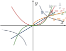
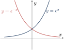
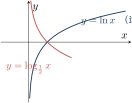
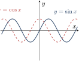
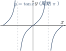
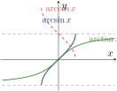
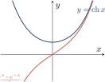
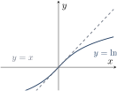
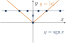
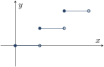
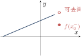
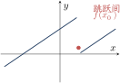
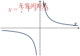
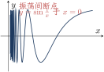
题型总结
| 序 | 题型 | 核心方法 |
| 1 | 求函数表达式（例1.1、1.2） | 整体代换（视 $x+\frac1x$ 为整体）; 函数方程组消元（$x→-x$ 或 $x→\frac1x$ 联立） |
| 2 | 求反函数（例1.3） | 反解 $x$、换字母; 含根式用 $e^{y},e^{-y}$ 互化（如 $y=\ln(x+\sqrt{x^{2}+1})$） |
| 3 | 复合函数运算（例1.4、1.5） | 已知 $f,\varphi$ 求 $f[\varphi]$ 直接代入; 已知 $f[\varphi]$ 求 $\varphi$ 设 $\varphi(x)=t$ 反解; 分段函数复合逐段讨论 |
| 4 | 有界性（例1.6、1.17） | 定义法（放缩 $|f|\le M$）; 区间上连续 + 端点极限存在则有界 |
| 5 | 单调性判断（例1.7） | 定义法 $(x_{1}-x_{2})(f(x_{1})-f(x_{2}))$ 判别; 复合规则（增增得增、减减得增） |
| 6 | 奇偶性（例1.8） | 定义法验证 $f(-x)=\pm f(x)$; 运算规则（奇$\pm$奇=奇、奇$\times$偶=奇等） |
| 7 | 周期性（例1.9、1.13） | 定义法验证 $f(x+T)=f(x)$; $f(ax+b)$ 周期为 $\frac{T}{|a|}$; 取整函数复合周期 |
| 8 | 最值问题（例1.10） | 对数变换化乘为加（$\ln$ 运算），转为和式最值 |
| 9 | 幂级数展开（例1.11） | $2^{x}=e^{x\ln2}=\sum\limits_{n=0}^{\infty}\frac{(x\ln2)^{n}}{n!}$（广义化 $e^{x}$） |
| 10 | 分段反函数（例1.12） | 各单调段分别反解，标明值域区间 |
| 11 | 极限中定参数（例1.14、1.27、1.34、1.35） | 极限存在的条件（左右极限相等）建立方程; 泰勒展开比较系数; 无穷小比阶定阶 |
| 12 | 求极限：含 $e^{\frac{1}{x-1}}$（例1.15） | 必须讨论左右极限（$e^{+∞}=+∞$，$e^{-∞}=0$） |
| 13 | 分段复合极限（例1.16） | 分段点处分别求左右极限 |
| 14 | $\frac{0}{0}$ 型（例1.21、1.22） | 等价替换优先 $→$ 洛必达 / 泰勒 |
| 15 | $0\cdot∞$ 型（例1.28） | 挪因子下分母; $x^{\alpha}\ln x$ 型用 $\lim\limits_{x\to 0^{+}} x^{\alpha}\ln x=0$ |
| 16 | $∞-∞$ 型（例1.30、1.31） | 有分母通分; 无分母提公因式或倒代换 $t=\frac1x$ |
| 17 | $∞^{0}, 0^{0}$ 型（例1.32） | 对数恒等式 $u^{v}=e^{v\ln u}$ |
| 18 | $1^{∞}$ 型（例1.24、1.33） | $e^{\lim\limits_{u\to 1} v(u-1)}$ 速算; 重要极限推广式 |
| 19 | 取整函数极限（例1.29） | 夹逼准则（$x-1<[x]\le x$） |
| 20 | 抓大头（例1.25、1.26） | 比较分子分母最高（低）次项; 含根式抓最高阶 |
| 21 | 保号性应用（例1.18） | 取 $\varepsilon=\frac A2$; 由极限符号推出邻域内函数符号 |
| 22 | 连续性定参（例1.36） | $\lim\limits_{x\to x_{0}} f=f(x_{0})$ 建立方程 |
| 23 | 间断点判断（例1.37、1.38） | 找无定义点 / 分段点，求左右极限分类 |
注意事项与易错点
有界性必须指明区间：$y=\frac1x$ 在 $(0,1)$ 无界，在 $(1,2)$ 有界;
区间端点极限为 $∞$ 则区间内无界。等价无穷小替换限乘除：只能在整体的乘除因子中替换，加减运算中直接替换可能出错（加减时用泰勒展开到系数不消的最低次幂）。
遇见 $e^{\frac{1}{x-a}}$、$\arctan\frac{1}{x-a}$ 必讨论左右极限：左右极限不等，则极限不存在。
洛必达三条件缺一不可：先验证是 $\frac00$ 或 $\frac∞∞$ 型;
若 $\lim\limits_{x\to a}\frac{f'}{F'}$ 不存在且不为 $∞$，不能断定原极限不存在（只能说明洛必达失效，需换方法）。并非任何两个无穷小都可比阶：如 $x\sin\frac1x$ 与 $x^{2}$（$x→0$）比价极限不存在。
夹逼准则：两边函数极限必须存在且相等;
仅 $g-h→0$ 不能夹逼。泰勒展开原则：上下同阶 / 幂次最低;
$o(\cdot)$ 阶数必须匹配。有反函数 $\not⇒$ 单调：严格单调必有反函数，反之不然;
非单调函数须分段求反函数。奇偶性前提：定义域关于原点对称，否则谈不上奇偶。
复合函数奇偶性口诀：内偶则偶，内奇同外。奇偶与导数、积分：奇函数的导函数是偶函数，偶函数的导函数是奇函数;
奇函数在对称区间上积分为 $0$，偶函数积分为两倍半区间积分。周期性：$f(x)$ 以 $T$ 为周期 $⇒$ $f(ax+b)$ 以 $\frac{T}{|a|}$ 为周期;
周期函数复合周期函数仍为周期函数。取整函数：$x-1<[x]\le x$;
$[x+n]=[x]+n$;
$\lim\limits_{x→0^{+}}[x]=0, \lim\limits_{x→0^{-}}[x]=-1$。局部保号性取 $\varepsilon=\frac A2$：可得邻域内 $f(x)>\frac A2$（比 $>0$ 更强的结论，常用于证明题）。
间断点判断与 $f(x_{0})$ 无关的定义陷阱：跳跃间断点只看左右极限是否都存在且不等;
可去间断点可通过补充/修改定义变连续。极限存在只是局部有界的充分条件（如 $\sin x$ 有界但 $x→∞$ 极限不存在）;
有界函数列/函数的运算需谨慎。幂指函数统一处理：$u^{v}=e^{v\ln u}$，$1^{∞}$ 用 $e^{\lim\limits_{u\to 1} v(u-1)}$ 最快;
$\lim\limits_{x\to\infty}(1+\frac ax)^{bx+c}=e^{ab}$ 可直接使用。
第2讲 数列极限
知识结构与考情
数列极限是函数极限的离散版本（数列即“整标函数” $x_n=f(n)$）。
本讲三大支柱：定义与性质（唯一性、有界性、保号性、子列定理）、两大存在准则（夹逼准则、单调有界准则）、计算工具（四则运算、$1^∞$ 型处理、$n$ 项和与 $n$ 次方根的夹逼、递推数列）。
其中单调有界准则证递推数列收敛并求极限是考研解答题的高频题型，海涅定理则是连接数列极限与函数极限的桥梁。
核心知识点
数列极限的定义与性质
设 $\{x_n\}$ 为数列，$a$ 为常数。
若对任意 $\varepsilon>0$，总存在正整数 $N$，使得当 $n>N$ 时恒有 $|x_n-a|<\varepsilon$，则称数列 $\{x_n\}$ 收敛于 $a$，记作 $\lim\limits_{n→∞}x_n=a$。
（子列定理）若数列 $\{a_n\}$ 收敛于 $a$，则其任何子列 $\{a_{n_k}\}$ 也收敛于 $a$。
逆否使用：找到一个发散子列，或两个收敛于不同极限的子列，即可断定原数列发散。
特别地，$\lim\limits_{n→∞}a_n=A \iff \lim\limits_{k→∞}a_{2k-1}=\lim\limits_{k→∞}a_{2k}=A$。（唯一性）收敛数列的极限唯一。
（有界性）收敛数列必有界;
反之，有界数列未必收敛（如 $a_n=(-1)^n$）。（保号性）设 $\lim\limits_{n→∞}x_n=a>b$，则存在 $N$，当 $n>N$ 时 $x_n>b$（加强形式：$x_n>\frac{a+b}{2}$）。
（四则运算）$\lim\limits_{n\to\infty} x_n=a, \lim\limits_{n\to\infty} y_n=b$，则 $\lim\limits_{n\to\infty}(x_n\pm y_n)=a\pm b$，$\lim\limits_{n\to\infty}(x_ny_n)=ab$，$\lim\limits_{n\to\infty}\dfrac{x_n}{y_n}=\dfrac{a}{b} (b\neq0)$。
$\lim\limits_{x→ x_0}f(x)=A$ 存在 $\iff$ 对任何以 $x_0$ 为极限的数列 $\{x_n\} (x_n\neq x_0)$，都有 $\lim\limits_{n→∞}f(x_n)=A$。
海涅定理的两大用法：
正向：由函数极限求数列极限，如 $x→0$ 时取 $x_n=\frac1n$，得 $\lim\limits_{n→∞}f(\frac1n)=\lim\limits_{x→0}f(x)$;
$x→+∞$ 时取 $x_n=n$。反向：选取两个特殊子列，若 $f(x_n)$ 极限不同（或某子列极限不存在），则函数极限不存在。
经典反例：$\sin\frac1x$（$x→0$）、$\sin x$ 与 $\cos x$ 在 $x→∞$。
极限存在准则
夹逼准则：若 $y_n\le x_n\le z_n$（从某项起）且 $\lim\limits_{n→∞}y_n=\lim\limits_{n→∞}z_n=a$，则 $\lim\limits_{n→∞}x_n=a$。
单调有界准则：单调增加且有上界（或单调减少且有下界）的数列必有极限。
收敛速度
设 $u_n=|x_n-a|, v_n=|y_n-a|$，$I=\lim\limits_{n→∞}\dfrac{u_n}{v_n}$：$I=0$ 时 $x_n$ 收敛得比 $y_n$ 快;
$I=b\neq0$ 时收敛速度是 $y_n$ 的 $\frac1b$ 倍;
$I=∞$ 时更慢。
如 $(1+\frac1n)^n-e\sim-\frac{e}{2n}$，说明其收敛速度与 $\frac1n$ 同阶。
公式与方法汇总
证有界：用数学归纳法或基本不等式放缩（如 $\frac{a+b}{2}\ge\sqrt{ab}$）;
证单调：作差 $x_{n+1}-x_n$、作商 $\frac{x_{n+1}}{x_n}$、数学归纳法，或借助 $f'(x)$ 的符号（$f'(x)>0$ 时数列单调性与 $x_2-x_1$ 的符号一致）;
求极限：两边取极限，设 $\lim\limits_{n\to\infty} x_n=A$，解方程 $A=f(A)$（配合唯一性说明取合理解）。
注：若 $f(x)$ 单调减少，则 $\{x_n\}$ 必不单调（呈摆动状收敛），此时改用“奇偶子列分别单调”或先求出不动点再用 $\lim\limits_{n\to\infty}|x_{n+1}-A|\le k|x_n-A|$ 夹逼。
典型图像
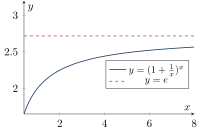
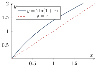
右：递推数列 $x_{n+1}=2\ln(1+x_n)$ 的迭代在 $y=x$ 与曲线之间摆动收敛于不动点 $\xi$
题型总结
有界性证明：基本不等式放缩（例2.1）;
极限性质应用：$|a_n|$ 与 $a_n$ 极限的关系、保号性判断最值的存在位置（前有限项内比较，例2.2、2.5、2.18）;
子列法判发散：奇偶子列极限不等或某子列发散（例2.3、2.4）;
四则运算逆用：由和、积、商极限的存在性反推各数列极限（注意“和的极限存在推不出各自极限存在”，例2.6）;
海涅定理：选特殊子列证函数极限不存在（例2.7）;
$1^∞$ 型：取对数或凑第二重要极限（例2.8、1.13）;
$n$ 项和极限：夹逼准则（放大缩小到两端同极限）或定积分定义 $\lim\limits_{n\to\infty}\frac1n\sum\limits_{i=1}^{n} f(\frac in)=\int_0^1 f$（例2.9、2.11）;
$n$ 次方根极限：“取最大值”结论（例2.10）;
递推数列：单调有界准则证收敛 + 取极限求值（例2.12–2.15，考研重点）;
定义辨析：$\varepsilon$-$N$ 语言的正误判断、收敛速度比较（例2.16、2.17）。
注意事项与易错点
$\lim\limits_{n\to\infty}|a_n|$ 存在推不出 $\lim\limits_{n\to\infty} a_n$ 存在（反例 $(-1)^n$）;
但 $\lim\limits_{n\to\infty} a_n=0\iff\lim\limits_{n\to\infty}|a_n|=0$，故证收敛于零可先证绝对值收敛于零再用夹逼。有界是收敛的必要条件而非充分条件;
有界数列必有收敛子列（致密性），但不能说原数列收敛。部分子列收敛不能推出原数列收敛;
必须所有子列都收敛到同一极限。
奇偶子列极限相等是数列收敛的充要条件。$\lim\limits_{n\to\infty}(x_n\pm y_n)$ 存在推不出 $\lim\limits_{n\to\infty} x_n,\lim\limits_{n\to\infty} y_n$ 存在（如振荡抵消）;
但若二者中一个收敛另一个发散，则和必发散。保号性的妙用：$a>b$ 时 $n>N$ 后 $x_n>\frac{a+b}2$，说明尾部“没有资格”参与最值比较，故最值只能出现在前有限项中。
夹逼准则两端的极限必须存在且相等，不能只验证差 $z_n-y_n→0$。
$f$ 单调减时 $\{x_n\}$ 不单调，单调有界准则失效，需改用摆动收敛技巧（见上框第4条）。
数列极限不满足洛必达法则的直接使用条件：先化为函数极限（海涅定理）再计算，如 $\lim\limits_{n→∞}n\bigl[(1+\frac1n)^n-e\bigr]=-\frac e2$。
放缩的常用来源：均值不等式、三角有界性、闭区间连续函数最值、初等不等式（$x>\ln(1+x)$ 等）。
第3讲 一元函数微分学的概念
知识结构与考情
本讲是微分学的概念基石，围绕导数与微分的定义展开：导数的三种等价定义（增量式、广义化增量式、函数式）、左右导数与可导充要条件、可导/连续/极限存在三者关系、导数的几何意义（切线法线）、高阶导数、微分定义及可微与可导的等价性。
考研概念题大量出在此讲：分段函数分界点可导性、含绝对值函数的可导性、导数定义式的广义化识别是三大核心考点。
核心知识点
导数的定义
判定原则：只要能凑成“$\dfrac{f(\text{点}+\text{增量})-f(\text{点})}{\text{增量}}$”且增量为无穷小，即为 $f'(x_0)$。
$f'(x_0)$ 存在 $\iff$ $f'_-(x_0)$ 与 $f'_+(x_0)$ 都存在且相等。
分段函数在分界点处必须用定义（或左右导数）判断可导性。
$f''(x_0)=\lim\limits_{\Delta x→0}\dfrac{f'(x_0+\Delta x)-f'(x_0)}{\Delta x}$，一般地 $f^{(n)}(x_0)=\lim\limits_{\Delta x→0}\dfrac{f^{(n-1)}(x_0+\Delta x)-f^{(n-1)}(x_0)}{\Delta x}$。
存在性传递：$f^{(n)}(x_0)$ 存在 $⇒$ $f^{(n-1)}(x)$ 在 $x_0$ 某邻域内存在、且 $f^{(n-1)}(x)$ 在 $x_0$ 处连续（注意 $f''(x_0)$ 存在推不出 $f''(x)$ 在邻域内存在，更推不出 $f''$ 连续）。
导数、极限、连续的关系
反向均不成立。
经典反例：$f(x)=|x|$ 在 $x=0$ 连续但不可导（左右导数 $=\pm1$ 不等）;
$y=x^{\frac13}$ 在 $x=0$ 连续、有垂直切线（$f'(0)=∞$ 无穷导数）但导数不存在。
导数的几何意义
$f'(x_0)$ 为曲线 $y=f(x)$ 在点 $(x_0,y_0)$ 处切线的斜率：
若 $\lim\limits_{\Delta x→0}\dfrac{\Delta y}{\Delta x}=∞$，称 $f(x)$ 在 $x_0$ 处有无穷导数：曲线有垂直切线但导数不存在。
导数存在 $⇒$ 切线存在;
切线存在 $\not⇒$ 导数存在（角点处两条单侧切线重合成一条但导数不存在的情况要区分清楚：$|x|$ 在原点无切线，尖点情形有切线无导数）。
微分
若 $\Delta y=A\Delta x+o(\Delta x)$（$A$ 与 $\Delta x$ 无关），则称 $f(x)$ 在 $x_0$ 可微，线性主部 $A\Delta x$ 称为微分：$\left.\mathrm{d}y\right|_{x=x_0}=A\Delta x$。
且
几何意义：用切线纵坐标的增量（$\mathrm{d}y$）近似代替曲线纵坐标的增量（$\Delta y$），误差 $o(\Delta x)$。
① 写增量 $\Delta y=f(x_0+\Delta x)-f(x_0)$;
② 写线性主部 $A\Delta x=f'(x_0)\Delta x$;
③ 验证 $\lim\limits_{\Delta x→0}\dfrac{\Delta y-A\Delta x}{\Delta x}=0$ 是否成立。
含绝对值函数的可导性（高频结论）
① 设 $\varphi(x)$ 在 $x_0$ 处连续，则 $f(x)=|x-x_0| \varphi(x)$ 在 $x_0$ 处：
② $f(x)$ 在 $x_0$ 连续时 $|f(x)|$ 的可导性：
$f(x_0)\neq0$：$|f(x)|$ 在 $x_0$ 必可导，且 $\bigl[|f(x)|\bigr]'\big|_{x_0}=\begin{cases}f'(x_0), & f(x_0)>0,\\[2pt] -f'(x_0), & f(x_0)<0;\end{cases}$
$f(x_0)=0$：若 $f'(x_0)=0$，则 $|f(x)|$ 在 $x_0$ 可导且导数为 $0$;
否则不可导（形成尖点）。
特别地：$F(x)=f(x) |x-a|$ 在 $x=a$ 处可导 $\iff f(a)=0$。
可导偶函数 $⇒$ $f'$ 为奇函数;
可导奇函数 $⇒$ $f'$ 为偶函数;
周期 $T$ 的可导函数 $⇒$ $f'$ 仍以 $T$ 为周期。
典型图像
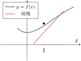
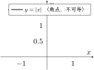
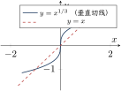
中：$|x|$ 在角点处左右导数不等;
右：$x^{1/3}$ 在原点有垂直切线（无穷导数），导数不存在
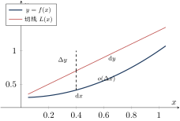
题型总结
奇偶性、周期性、有界性与导数的关系辨析（例3.1、3.2）：可导奇函数的导数为偶函数等四条性质的组合判断;
抽象函数的连续性与可导性（例3.3）：利用 $|f(x)|\le|f(a)|$ 型条件与定义判别;
用定义求导数值（例3.4）：多项式连乘函数在零点处的导数（提取因式 $+$ 定义）;
$f(x)|x-a|$ 型可导性（例3.5–3.7）：充要条件 $f(a)=0$;
推广到 $|f(x)|$、$|f(x-1)|$ 等复合情形;切线相关计算（例3.8）：切线与坐标轴交点的极限问题;
微分定义的应用（例3.10、3.11）：由 $\Delta y=A\Delta x+o(\Delta x)$ 确定 $A=f'(x_0)$，进而求复合函数在某点的导数值。
注意事项与易错点
增量必须广义化识别：考研中 $\Delta x$ 常被替换为 $-2h$、$3x^{2}$、$\sin h$ 等无穷小，识别“$\frac{\text{函数差}}{\text{增量}}$”结构是解题第一步;
注意 $\lim\limits_{h→0}\frac{f(x_0+2h)-f(x_0-h)}{2h}$ 不能直接等于 $f'(x_0)$（分子增量不对称）。可导必连续，连续未必可导;
但“连续是可导的必要条件”意味着：不连续 $⇒$ 不可导，可导性讨论前先看连续性。分段函数分界点：一定要用左右导数（或定义）判断，切勿直接对两侧表达式分别求导后取极限代替——$\lim\limits_{x→ x_0^{+}}F'(x)=A$ 可以推出 $F'_+(x_0)=A$（需 $F'$ 在右侧连续），但反向极限不存在时 $F'_+(x_0)$ 仍可能存在，必须回定义验证。
$|f(x)|$ 与 $f(x)$ 的可导性没有必然联系：$f$ 连续 $⇒|f|$ 连续，反之不真;
$f$ 可导 $\not⇒|f|$ 可导（在零点处见上方公式框）。无穷导数是“导数不存在”，不能参与四则运算，但切线存在（垂直切线）。
高阶导数的存在性只保证低一阶在邻域内存在且在该点连续，不能推出更高阶的性质，也不能推出 $f''(x)$ 在邻域内处处存在。
多项连乘求导：先提取公因式化为“零点因子”结构再用定义（如 $[(e^x-1)g(x)]'\big|_{x=0}=g(0)$），比硬套乘法法则快捷且不易错。
微分与导数：一元函数中可微 $\iff$ 可导，$A=f'(x_0)$;
$\mathrm{d}x=\Delta x$。
$\Delta y-\mathrm{d}y=o(\Delta x)$ 是判断“能否用微分近似”的依据。
第4讲 一元函数微分学的计算
知识结构与考情
本讲解决“怎么求导”：求导法则（四则、复合链式法则、微分形式不变性）、各类型函数的求导方法（分段函数、反函数、隐函数、参数方程、对数求导、幂指函数）、以及高阶导数三大算法（归纳法、莱布尼茨公式、泰勒展开式比较系数）。
求导计算是整卷计算的地基，必须达到“看式知法、落笔无误”的熟练度。
核心知识点
求导法则
三因子推广：$(uvw)'=u'vw+uv'w+uvw'$。
微分形式：$\mathrm{d}(uv)=v \mathrm{d}u+u \mathrm{d}v$，$\mathrm{d}\bigl(\frac uv\bigr)=\dfrac{v \mathrm{d}u-u \mathrm{d}v}{v^{2}}$。
微分形式不变性：无论 $u$ 是中间变量还是自变量，恒有 $\mathrm{d}y=f'(u) \mathrm{d}u$，即 $\mathrm{d}\{f[g(x)]\}=f'[g(x)] \mathrm{d}[g(x)]$。
| $(x^{\alpha})'=\alpha x^{\alpha-1}$ | $(a^{x})'=a^{x}\ln a$ | $(e^{x})'=e^{x}$ | $(\log_a x)'=\dfrac{1}{x\ln a}$ |
| $(\ln|x|)'=\dfrac1x$ | $(\sin x)'=\cos x$ | $(\cos x)'=-\sin x$ | $(\tan x)'=\sec^{2}x$ |
| $(\cot x)'=-\csc^{2}x$ | $(\sec x)'=\sec x\tan x$ | $(\csc x)'=-\csc x\cot x$ | $(\arcsin x)'=\dfrac{1}{\sqrt{1-x^{2}}}$ |
| $(\arccos x)'=-\dfrac{1}{\sqrt{1-x^{2}}}$ | $(\arctan x)'=\dfrac{1}{1+x^{2}}$ | $(\mathrm{arccot} x)'=-\dfrac{1}{1+x^{2}}$ | $(\sqrt{x^{2}+a^{2}})'=\dfrac{x}{\sqrt{x^{2}+a^{2}}}$ |
各类函数的求导方法
分段函数：分段点用定义（或左右导数）求导，非分段点用公式求导。
反函数：设 $y=f(x)$ 单调、可导且 $f'(x)\neq0$，反函数 $x=\varphi(y)$：
$$ \varphi'(y)=\frac{\mathrm{d}x}{\mathrm{d}y}=\frac{1}{\dfrac{\mathrm{d}y}{\mathrm{d}x}}=\frac{1}{f'(x)},\qquad \varphi''(y)=-\frac{f''(x)}{[f'(x)]^{3}}. $$隐函数：方程 $F(x,y)=0$ 两边对 $x$ 求导（$y$ 视为中间变量，遇到 $y$ 的函数用链式法则），解出 $y'$;
求 $y''$ 时可将 $y'$ 表达式再对 $x$ 求导，或对方程求导两次。参数方程：$\begin{cases}x=\varphi(t)\\[4pt] y=\psi(t)\end{cases}$（$\varphi'\neq0$）：
$$ \frac{\mathrm{d}y}{\mathrm{d}x}=\frac{\psi'(t)}{\varphi'(t)},\qquad \frac{\mathrm{d}^{2}y}{\mathrm{d}x^{2}}=\frac{\mathrm{d}}{\mathrm{d}x}\Bigl(\frac{\mathrm{d}y}{\mathrm{d}x}\Bigr)=\frac{\psi''(t)\varphi'(t)-\psi'(t)\varphi''(t)}{[\varphi'(t)]^{3}}. $$对数求导法：多项相乘、相除、开方、乘方，先取对数化简再求导：$\dfrac{y'}{y}=[\ln f(x)]'$。
幂指函数 $u(x)^{v(x)}$：化为 $e^{v(x)\ln u(x)}$ 后按复合求导，或直接用公式：
$$ \bigl[u(x)^{v(x)}\bigr]'=u(x)^{v(x)}\Bigl[v'(x)\ln u(x)+v(x)\frac{u'(x)}{u(x)}\Bigr]. $$
高阶导数
适用于两函数乘积的高阶导数;
系数可用“杨辉三角”记忆。
将 $f(x)$ 按任意可行方式展开为 $x$ 的幂级数，由泰勒展开的唯一性，比较 $x^n$ 的系数：$\dfrac{f^{(n)}(0)}{n!}=$ 该项系数 $⇒ f^{(n)}(0)=n!\times$系数。
例：$f(x)=x^{2}\ln(1+x)=\sum\limits_{n=1}^{∞}\dfrac{(-1)^{n-1}}{n}x^{n+2}⇒ f^{(n)}(0)=\dfrac{(-1)^{n-1}n!}{n-2} (n\ge3)$。
典型图像
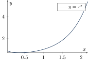
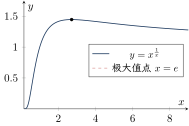
题型总结
多因子连乘在某点的导数：化为“经典形式”（提取零点因子）后用定义，避免直接展开（例4.1）;
复合函数在某点的导数值：链式法则，无须先求复合表达式（例4.2、4.3）;
微分计算：链式法则或一阶微分形式不变性（例4.4）;
含绝对值函数的一、二阶导数：先写成分段函数，分段点用定义（例4.5、4.6）;
反函数（二阶）导数：直接套用 $\varphi''(y)=-\frac{f''(x)}{[f'(x)]^3}$（例4.7）;
隐函数（二阶）导数：两边对 $x$ 求导，注意复合;
二阶时继续求导并代入 $y'$（例4.8、4.11）;参数方程（二阶）导数：$\frac{y'}{x'}$，二阶用公式或“$\frac{\mathrm{d}}{\mathrm{d}x}(\cdot)=\frac{1}{x'(t)}\frac{\mathrm{d}}{\mathrm{d}t}(\cdot)$”（例4.9、4.10）;
幂指函数导数：$x^{x}$、$x^{1/x}$ 等，指数化或对数求导（例4.12、4.13）;
$n$ 阶导数：归纳法（$\sin x$、$f'=f^{2}$ 型）、五大公式、莱布尼茨公式、泰勒展开比较系数（例4.14–4.19）。
注意事项与易错点
$(\ln|x|)'=\frac1x$：绝对值符号“视而不见”，对 $\ln(-x)$ 求导同样是 $\frac1x$。
求某点的导数值不必先求导函数：如 $[f(x)]^{2}$ 在 $x_0$ 的导数用定义与链式直接算，避免复杂化。
含绝对值：先去绝对值写成分段函数;
分段点有定义用定义求导，无定义不用求。参数方程二阶导数：常见错误是 $\frac{\mathrm{d}^{2}y}{\mathrm{d}x^{2}}\ne\frac{\psi''(t)}{\varphi''(t)}$，必须对一阶结果再“对 $x$”求导（分母是 $x'(t)$ 而非 $t'$）。
隐函数求导中 $y$ 是中间变量：$(y^{2})'=2yy'$，$(xy^{2})'=y^{2}+2xy y'$;
漏乘 $y'$ 是最高频错误。幂指函数：既不能用 $(x^{\alpha})'=\alpha x^{\alpha-1}$（指数非常数），也不能用 $(a^{x})'=a^{x}\ln a$（底非常数），必须指数化或对数求导。
莱布尼茨公式：其中一个因子取低阶导（如 $x^{2}$ 三阶后为零），优先让“难求导的因子”保留低阶项，减少计算量。
泰勒展开求 $n$ 阶导数：务必展开到 $x^{n}$ 项，且注意系数与 $\frac{f^{(n)}(0)}{n!}$ 对应;
展开式唯一，方法任选（间接展开最常用）。高阶导数公式记不住时的应急推导：$(e^{ax})^{(n)}=a^{n}e^{ax}$、$\sin$ 求导“加 $\frac\pi2$ 相位”、$\frac{1}{ax+b}$ 每阶“降一次幂、乘一次系数”。
第5讲 一元函数微分学的应用（一）——几何应用
知识结构与考情
本讲用导数描绘函数的性态，是“看图说话”的理论基础：单调性与极值（必要条件、三个充分条件）、凹凸性与拐点（判别法、极值点/拐点的重要结论与多项式计数公式）、渐近线（铅直、水平、斜三类）、最值、函数作图与曲率。
选择题高频考点：由 $f',f''$ 图像反推 $f$ 性态、极值拐点联合判断、多项式重根型极值拐点计数。
核心知识点
单调性与极值
设 $f(x)$ 在 $[a,b]$ 上连续，在 $(a,b)$ 内可导：若 $f'(x)\ge0$ 且等号仅在有限个点（或任何子区间上不恒成立）处成立，则 $f(x)$ 在 $[a,b]$ 上严格单调增加;
$f'\le0$ 同理得严格单调减少。
定义：若存在 $x_0$ 的某邻域，使邻域内 $f(x)\le f(x_0)$（$\ge$），则 $x_0$ 为极大（小）值点。
极值是局部概念，端点不讨论;
常数函数处处取极值。
必要条件（费马定理）：$x_0$ 为极值点且 $f'(x_0)$ 存在 $⇒ f'(x_0)=0$（驻点）。
极值点 $\in$ $\{$驻点$\}\cup\{$$f'$不存在的点$\}$，反之不成立。
第一充分条件：$f$ 在 $x_0$ 连续，在去心邻域内可导。
$f'$ 左正右负 $⇒$ 极大;
左负右正 $⇒$ 极小;
不变号 $⇒$ 非极值。（不要求 $x_0$ 可导，可用于尖点）
第二充分条件：$f'(x_0)=0$ 且 $f''(x_0)\neq0$：$f''(x_0)<0⇒$ 极大值;
$f''(x_0)>0⇒$ 极小值。
第三充分条件：$f^{(m)}(x_0)=0 (m=1,…,n-1)$，$f^{(n)}(x_0)\neq0 (n\ge2)$：当 $n$ 为偶数时 $x_0$ 是极值点（$f^{(n)}<0$ 极大、$>0$ 极小）;
$n$ 为奇数时不是极值点。
凹凸性与拐点
定义1（中点弦）：$f$ 在区间 $I$ 连续，对任意 $x_1\neq x_2\in I$：
定义2（切线位置）：切线恒在曲线下方为凹，恒在上方为凸： $\dfrac{f(x_0)+f'(x_0)(x-x_0)<f(x)}{\text{切线} \text{曲线}} ⇒$ 凹。
广义化：$f(\lambda_1x_1+\lambda_2x_2)<\lambda_1f(x_1)+\lambda_2f(x_2)$（$\lambda_1,\lambda_2>0, \lambda_1+\lambda_2=1$）为凹。
定义：连续曲线凹弧与凸弧的分界点 $(x_0,f(x_0))$（间断点不可能是拐点; 拐点要写坐标）。
判别法：$f''>0$ 凹，$f''<0$ 凸;
$f''$ 在 $x_0$ 两侧变号 $⇒$ $(x_0,f(x_0))$ 是拐点（第一充分条件，不要求二阶可导）。
第二充分条件：$f''(x_0)=0$ 且 $f'''(x_0)\neq0⇒$ 拐点。
第三充分条件：$f^{(m)}(x_0)=0 (m=2,…,n-1)$，$f^{(n)}(x_0)\neq0 (n\ge3)$：$n$ 为奇数时 $(x_0,f(x_0))$ 是拐点。
① 可导点不可能既是极值点又是拐点;
不可导点可以（如 $y=x^{1/3}$ 型尖点两侧）。
② 设 $f(x)=(x-a)^{n}g(x)$，$g(a)\neq0$：$n$ 为偶数时 $x=a$ 是极值点;
$n$ 为奇数时 $(a,0)$ 是拐点。
③ 多项式 $f(x)=\prod\limits_{i=1}^{k}(x-a_i)^{n_i}$，记 $k_1$ 为 $n_i=1$ 的个数、$k_2$ 为 $n_i>1$ 且偶的个数、$k_3$ 为 $n_i>1$ 且奇的个数，则
渐近线
铅直：$\lim\limits_{x→ x_0}f(x)=∞$（或单侧）$⇒ x=x_0$。
水平：$\lim\limits_{x→+∞}f(x)=y_1$ 或 $\lim\limits_{x→-∞}f(x)=y_2$ $⇒ y=y_1$ 或 $y=y_2$（左右可各一条）。
斜：若 $a=\lim\limits_{x→\pm∞}\dfrac{f(x)}{x}\neq0$ 且 $b=\lim\limits_{x→\pm∞}[f(x)-ax]$ 存在，则 $y=ax+b$ 为斜渐近线（同方向水平与斜渐近线不能共存）。
求解顺序：先铅直 $→$ 再水平 $→$ 最后斜。
最值、作图与曲率
闭区间最值三步：① 求 $(a,b)$ 内驻点与不可导点;
② 算端点值 $f(a),f(b)$;
③ 比较大小。
开区间/无穷区间另需比较端点单侧极限。
最值与极值：内部最值点必是极值点。
作图步骤：① 定义域、奇偶性、周期性;
② $f'$ 定单调区间与极值;
③ $f''$ 定凹凸与拐点;
④ 渐近线;
⑤ 描点作图。
曲率与曲率半径：
弯曲程度越大，曲率越大，曲率半径越小。
圆上任一点曲率均为 $\frac1{R_{\text{圆}}}$;
直线上曲率为 $0$。
典型图像
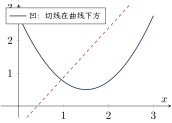
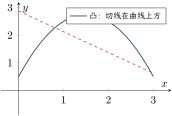
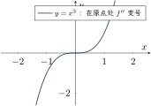
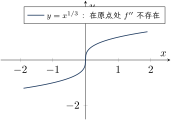
两者都是“$f''$ 变号”的例子
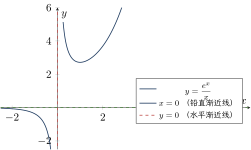
当 $x→+∞$ 时无水平渐近线，斜渐近线也不存在（$e^x$ 增长太快）
题型总结
借助 $f'\cdot f$ 或微分方程判断函数值大小（例5.1）：由 $[e^{-F(x)}f(x)]'$ 等构造判断;
极值的判定（例5.2、5.3、5.6）：第二充分条件、隐函数求极值、含绝对值函数的极值与拐点;
拐点的判定（例5.5、5.7）：第二/第三充分条件、多项式重根判断;
极值点与拐点计数（例5.8）：利用重根结论与计数公式;
求各类渐近线（例5.9）：按“铅直 $→$ 水平 $→$ 斜”顺序逐条求;
利用单调性比较大小/求数列最大项（例5.10）：如 $n^{1/n}$ 在 $n=e$ 取最大，比较 $\sqrt2$ 与 $\sqrt[3]3$;
函数作图（例5.11–5.13）：隐函数、幂指函数 $y=x^x$、分式函数 $y=\frac{e^x}{x}$ 的完整作图;
极坐标与参数方程作图、曲率（例5.14、5.15）：转直角坐标、求指定点曲率。
注意事项与易错点
严格单调 $\neq$ 导数处处为正：$y=x^{3}$ 在 $(-∞,+∞)$ 严格增但 $f'(0)=0$;
只要求 $f'\ge0$ 且不在任何子区间上恒等于零。极值点不要求可导：驻点、不可导点（尖点）都可能成为极值点;
间断点也可以是极值点（四类间断点均可）。第二充分条件是充分非必要：$f''(x_0)=0$ 时改用第一或第三充分条件，不能直接下结论。
第三充分条件的记忆口诀：偶阶导数非零管极值，奇阶导数非零管拐点（配合“前 $n-1$ 阶全为零”的前提）。
拐点必须写坐标 $(x_0,f(x_0))$，极值点写横坐标即可;
拐点只对连续曲线定义，间断点处无拐点。求渐近线别漏单侧极限：水平、斜渐近线要分 $x→+∞$ 与 $x→-∞$ 各算一次;
同一方向上水平与斜渐近线互斥;
曲线可以穿过渐近线。斜渐近线 $a,b$ 要都存在才算数，只求出 $a\neq0$ 而 $b$ 不存在时无斜渐近线。
数列最值：连续变量求出最值点后，若不在整数上（如 $e$），需比较相邻整数项（如 $\sqrt2$ 与 $\sqrt[3]3$）。
曲率公式中 $y''$ 取绝对值，曲率非负;
圆的曲率是常数 $\frac1R$。
第6讲 一元函数微分学的应用（二）——中值定理、微分等式与微分不等式
知识结构与考情
本讲是考研证明题的第一高地。
知识主线为“两套定理群”：闭区间连续函数定理群（有界与最值、介值、平均值、零点定理）与微分中值定理群（费马 $→$ 罗尔 $→$ 拉格朗日 $→$ 柯西 $→$ 泰勒公式）。
核心能力是：根据待证结论构造辅助函数、确定所需区间与定理、方程根的个数讨论、不等式证明三大方法。
核心知识点
闭区间上连续函数的定理群
定理1（有界与最值）：$f$ 在 $[a,b]$ 上取得最大值 $M$ 与最小值 $m$，从而有界：$m\le f(x)\le M$。
定理2（介值定理）：对任意 $\mu\in[m,M]$，存在 $\xi\in[a,b]$ 使 $f(\xi)=\mu$。
定理3（平均值定理）：对 $a<x_1<x_2<⋯<x_n<b$，存在 $\xi\in[x_1,x_n]$ 使 $f(\xi)=\frac{f(x_1)+f(x_2)+⋯+f(x_n)}{n}$。
定理4（零点定理）：若 $f(a)\cdot f(b)<0$，则存在 $\xi\in(a,b)$ 使 $f(\xi)=0$。
推广的零点定理：$f$ 在 $(a,b)$ 内连续，若 $\lim\limits_{x→ a^{+}}f(x)=\alpha$ 与 $\lim\limits_{x→ b^{-}}f(x)=\beta$ 存在（或为 $∞$）且 $\alpha\beta<0$，则 $f(x)=0$ 在 $(a,b)$ 内至少有一根。
微分中值定理群
费马定理：$x_0$ 为极值点且可导 $⇒ f'(x_0)=0$。
罗尔定理：$[a,b]$ 连续、$(a,b)$ 可导、$f(a)=f(b)$ $⇒$ 存在 $\xi\in(a,b)$，$f'(\xi)=0$。
推广的罗尔定理：$f$ 在 $(a,b)$ 可导，若 $\lim\limits_{x→ a^{+}}f(x)=\lim\limits_{x→ b^{-}}f(x)=A$，则存在 $\xi$ 使 $f'(\xi)=0$。
拉格朗日中值定理：$[a,b]$ 连续、$(a,b)$ 可导 $⇒$ 存在 $\xi\in(a,b)$：
柯西中值定理：$f,g$ 在 $[a,b]$ 连续、$(a,b)$ 可导且 $g'(x)\neq0$ $⇒$ 存在 $\xi\in(a,b)$：
带拉格朗日余项（$f$ 在 $x_0$ 邻域 $n+1$ 阶可导）：
$\xi$ 介于 $x$ 与 $x_0$ 之间。
带佩亚诺余项（$f$ 在 $x_0$ 处 $n$ 阶可导）：
$x_0=0$ 时称麦克劳林公式。
常用展开式见第1讲公式框。
若 $f^{(n)}(x)$ 在区间 $I$ 内无零点（或恒正/恒负），则 $f(x)=0$ 在 $I$ 内至多有 $n$ 个实根;
一般地，若 $f^{(n)}(x)=0$ 至多有 $k$ 个根，则 $f(x)=0$ 至多有 $k+n$ 个根。
推论：若 $f'(x)\ge0$（$a<x<b$），则 $f(a)\le f(x)\le f(b)$;
若 $f''\ge0$，则 $f'(a)\le f'(x)\le f'(b)$。
实系数奇次方程至少有一个实根。
| 待证结论中出现 | 构造辅助函数 $F(x)$ |
| $f'(\xi)+\lambda f(\xi)=0$ | $F(x)=f(x)e^{\lambda x}$ |
| $f'(\xi)g(\xi)+f(\xi)g'(\xi)=0$ | $F(x)=f(x)g(x)$ |
| $f'(\xi)g(\xi)-f(\xi)g'(\xi)=0$ | $F(x)=\dfrac{f(x)}{g(x)}$ |
| $f'(\xi)x-f(\xi)=0$ | $F(x)=\dfrac{f(x)}{x}$ |
| $f''(\xi)f(\xi)-[f'(\xi)]^{2}=0$（$f\neq0$） | $F(x)=\dfrac{f'(x)}{f(x)}$ 或 $\ln f(x)$（$f>0$） |
| $f'(\xi)=0$（$f(a)=f(b)=f(c)$） | 直接多次用罗尔定理 |
| $f(\xi)+f'(\xi)=0$ 型 | $F(x)=e^{x}f(x)$ |
| $f''(\xi)+f'(\xi)=0$ 型 | $F(x)=e^{x}f'(x)$ |
| $\xi f'(\xi)+f(\xi)=0$ | $F(x)=xf(x)$ |
记忆方法：乘积求导公式 $(uv)'=u'v+uv'$ 与商求导公式 $\bigl(\frac uv\bigr)'=\frac{u'v-uv'}{v^{2}}$ 的逆用。
典型图像
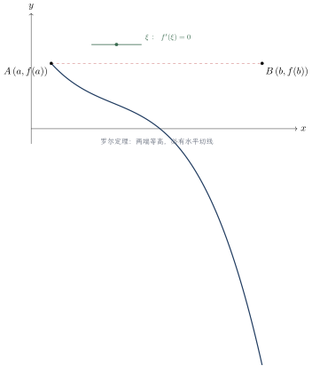
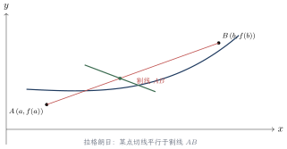
题型总结
介值/零点定理证明 $f(\xi)=\mu$（例6.1、6.2）：构造 $F(x)=f(x)-\mu$ 或先求最值再用介值;
端点信息可用极限保号性;罗尔定理证 $f'(\xi)=0$（例6.3–6.7）：凑“三点等值”或构造辅助函数（对照表）;
含参数因子 $F(x)=f(x)(b-x)^{a}$;
证 $f''$ 用两次罗尔;
$f\cdot f'$ 型构造 $F=\frac12f^{2}$;拉格朗日中值定理（例6.8、6.20、6.21）：见 $f(b)-f(a)$ 想拉格朗日;
“用导数控制函数值”;
证不等式（如 $\frac{\ln b-\ln a}{b-a}=\frac{1}{\xi}$）;
结合导数有界性证函数有界;柯西中值定理（例6.11）：结论中出现 $\frac{f(b)-f(a)}{g(b)-g(a)}$ 或两个函数（如含 $\ln$、$e^{x}$）时优先考虑;
泰勒公式证题（例6.12、6.13）：证 $f^{(n)}(\xi)\neq0$ 或高阶信息，选好展开点（常取极值点、中点、端点），代入特殊值联立消项;
方程根的个数（例6.14–6.18）：零点定理定存在 + 单调性/罗尔原话定唯一;
含参方程 $e^{x}=kx$ 数形结合;
函数列 $f_n(x)=x^{n}+nx-1$ 的根序列;不等式证明（例6.19–6.21）三大方法：函数性态法（单调性/极值/凹凸性）、常数变量化、中值定理法。
注意事项与易错点
定理条件逐条核对：罗尔“闭连、开导、端等”三条件缺一不可;
柯西定理必须 $g'(x)\neq0$（保证分母 $g(b)-g(a)\neq0$）。选定理的经验：证 $f^{(n)}(\xi)=0$ 优先罗尔;
证 $f^{(n)}(\xi)\neq0$ 或不等式优先泰勒;
见 $f(b)-f(a)$ 优先拉格朗日;
两函数（或 $e^{\xi}$、$\xi^{2}$）作分母优先柯西。多次使用罗尔：证 $f''(\xi)=0$ 需要三个函数值相等的点，或在两段上各得 $f'(\xi_1)=f'(\xi_2)=0$ 后对 $f'$ 再用罗尔。
泰勒公式关键：把握展开点 $x_0$ 与被展开点 $x$，设法消去未知项向结论靠拢;
常代入 $x=a,b$ 及驻点处的信息。根的个数：罗尔原话给“至多”，零点定理给“至少”，两者夹逼得“恰有”;
证明唯一性时注意严格单调区间划分。推广的零点/罗尔定理：区间端点无定义时，用端点单侧极限代替函数值（如 $x→+∞$ 时 $f(x)=A$ 相当于“右端点等高”）。
不等式构造：移项作差构造 $f(x)$ 后，先看定义域，再求导定号;
常数变量化对含两个常数的对称不等式特别有效。辅助函数：结论含 $e^{\pm\lambda\xi}$、$\xi$、$\frac{f'}{f}$ 等结构时直接套构造表;
构造后核对端点值是否满足罗尔条件。
第7讲 一元函数微分学的应用（三）——物理应用与经济应用
知识结构与考情
本讲内容篇幅小、套路固定，属“送分章节”，但常与微分方程（第15讲）综合。
物理侧：速度与加速度（位移的导数）、相关变化率;
经济侧（数三重点）：复利与贴现、成本、收益、利润函数、边际分析、弹性分析。
记忆性公式较多，需理解经济含义。
核心知识点
物理应用
直线运动：速度 $v(t)=s'(t)=\dfrac{\mathrm{d}s}{\mathrm{d}t}$;
加速度 $a(t)=v'(t)=s''(t)=\dfrac{\mathrm{d}^{2}s}{\mathrm{d}t^{2}}$。
相关变化率：若 $y=f(x)$ 而 $x=x(t)$，则 $\dfrac{\mathrm{d}y}{\mathrm{d}t}=f'(x)\cdot\dfrac{\mathrm{d}x}{\mathrm{d}t}$（链式法则）;
一般由几何/物理关系建立 $A$、$B$ 间的等式，再两边对 $t$ 求导，代入已知变化率求未知变化率。
经济应用（数三）
离散复利：年利率 $r$，一年计 $n$ 次息，$t$ 年后本利和
连续复利：$A_t=\lim\limits_{n→∞}A\bigl(1+\frac rn\bigr)^{nt}=Ae^{rt}$。
反解贴现：现值 $A=\dfrac{A_t}{e^{rt}}$;
使收入现值最大的时间 $t$ 满足对 $Ae^{rt}-C(t)$ 型函数求极值。
需求 $Q=Q(p)$（单减）;
供给 $q=q(p)$（单增）。
总成本 $C(Q)=C_1+\underbrace{C_2(Q)}_{\text{可变}}$;
平均成本 $\bar C=AC=\dfrac{C(Q)}{Q}$。
收益 $R(Q)=pQ$;
利润 $L(Q)=R(Q)-C(Q)$。
边际：$MC=C'(Q)$，$MR=R'(Q)$，$ML=L'(Q)$——自变量增加 1 个单位时因变量的近似改变量。
利润最大化条件：$MR=MC$，且 $ML'(Q)<0$（二阶验证）。
需求价格弹性：$\eta_d=\dfrac{EQ}{Ep}=\dfrac{p}{Q(p)}Q'(p)$（需求单减故 $\eta_d<0$，题目要求正数时取 $-\dfrac{p}{Q}Q'$）;
收益与弹性的关系：$\dfrac{\mathrm{d}R}{\mathrm{d}p}=Q(1-\eta)$。
经济含义：$p$ 上涨 1
题型总结
相关变化率（例7.1）：由几何关系（如曲线 $y=x^{3}$ 上动点、气球体积、影子长度）建立等式，两边对 $t$ 求导;
连续复利最优化（例7.2）：现值或终值函数求极值，如 $\max\limits_{t>0} [ R(t)e^{-rt}-C ]$;
边际与利润最大化（例7.3）：由 $L(Q)=R-C$ 求驻点，$MR=MC$ 定价;
弹性关系式证明与计算（例7.4）：证明并使用 $\frac{\mathrm{d}R}{\mathrm{d}p}=Q(1-\eta)$;
弹性与收益方向判断（例7.5）：$|\eta|<1$（缺乏弹性）提价增收;
$|\eta|>1$（富有弹性）降价增收。
注意事项与易错点
变量选择：无特殊说明时，需求、供给以价格 $p$ 为自变量;
成本、收益、利润以产量 $Q$ 为自变量，求导前先确认对谁求导。复利三态要分清：年付 1 次 $(1+r)^{t}$、年付 $n$ 次 $(1+\frac rn)^{nt}$、连续 $e^{rt}$，题目会明确告知;
贴现是它的逆运算 $\div e^{rt}$。需求弹性符号：$Q'(p)<0$，故 $\eta_d<0$;
若题目要求“需求弹性”为正数，取 $\eta_d=-\frac{p}{Q}Q'$，切勿丢负号。边际是近似值：“边际成本 $MC$”表示再生产 1 件所需成本的近似;
与“平均成本 $\bar C$”严格区分，$\bar C$ 最小在 $\bar C'(Q)=0$（即 $MC=AC$）处。弹性记忆口诀：“弹性 $\times$ 自变量 $=$ 导数 $\times$ 因变量比”：$\eta=\frac{x}{y}y'$;
收益弹性结论 $\frac{\mathrm{d}R}{\mathrm{d}p}=Q(1-\eta)$ 可直接使用。物理应用综合题常与微分方程结合（如冷却、降落伞），方法见第15讲。
第8讲 一元函数积分学的概念与性质
知识结构与考情
本讲是积分学的概念总纲，与第3讲（微分学概念）地位对称，概念选择题极为高频。
三大主线：原函数与不定积分（存在性定理）、定积分（定义、几何意义、可积条件、六大性质）、变限积分（连续性与可导性的精细讨论）与反常积分（定义、敛散判别、$p$ 积分结论）。
其中“原函数存在 $\iff$ 定积分存在”的差异辨析、“变限积分在间断点处的可导性”是张宇30讲的招牌考点。
核心知识点
原函数与不定积分
在区间 $I$ 上，若 $F'(x)=f(x)$，则称 $F(x)$ 是 $f(x)$ 在 $I$ 上的一个原函数;
全体原函数称不定积分：$\displaystyle\int f(x) \mathrm{d}x=F(x)+C$。
原函数存在定理：(1) 连续函数必有原函数; (2) 含第一类间断点或无穷间断点的函数在含该点的区间内必无原函数; (3) 含振荡间断点的函数可能有原函数（如 $f(x)=2x\sin\frac1x-\cos\frac1x$ 有原函数 $F(x)=x^{2}\sin\frac1x$）。
注意：谈及原函数必须指明区间。
定积分的定义、可积性与性质
设 $f(x)$ 在 $[a,b]$ 上有界，作分割与取点，记 $\lambda=\max\Delta x_i$，若
存在且与分法、取法无关，则称 $f$ 在 $[a,b]$ 上可积。
等价定义（特殊分割）：
几何意义：曲边梯形面积的代数和（$x$ 轴上方取正、下方取负）。
可积的充分条件：①连续;
②单调;
③有界且只有有限个（第一类）间断点。
必要条件：可积必有界（无界必不可积）。
严格化推论：$f,g$ 连续、$f\ge g$ 且不恒相等、$a<b$ $⇒$ $\int_a^b f \mathrm{d}x>\int_a^b g \mathrm{d}x$;
特别地，非负连续且不恒为零 $⇒\int_a^b f \mathrm{d}x>0$。
变限积分
设 $F(x)=\displaystyle\int_a^x f(t) \mathrm{d}t$： ① $f$ 可积 $⇒ F$ 连续（不论 $f$ 是否连续）;
② $f$ 连续 $⇒ F$ 可导且 $F'(x)=f(x)$（原函数存在定理）;
③ $x_0$ 为 $f$ 的跳跃间断点 $⇒ F$ 在 $x_0$ 连续但不可导，且 $F'_-(x_0)=\lim\limits_{x→ x_0^{-}}f(x)$，$F'_+(x_0)=\lim\limits_{x→ x_0^{+}}f(x)$;
④ $x_0$ 为 $f$ 的可去间断点 $⇒ F$ 在 $x_0$ 可导，且 $F'(x_0)=\lim\limits_{x→ x_0}f(x)\neq f(x_0)$，此时 $F$ 不是 $f$ 的原函数;
⑤ $f$ 含无穷间断点 $⇒ F$ 在该点不可导。
反常积分
无穷区间：$\displaystyle\int_a^{+∞}f \mathrm{d}x=\lim_{b→+∞}\int_a^b f \mathrm{d}x$;
$\int_{-∞}^{+∞}f \mathrm{d}x$ 需拆成两段分别收敛才算收敛。
瑕积分：瑕点 $a$（或 $b$，或内部 $c$）——先拆分，使每个积分只有一个奇点，再用极限定义判敛散。
比较判别法（$0\le f\le g$）：“大收 $⇒$ 小收;
小发 $⇒$ 大发”;
极限形式：$\lim\limits_{x\to+\infty}\frac fg=\lambda$，$0<\lambda<+∞$ 时同敛散。
推广：$\displaystyle\int_a^{+∞}\frac{\mathrm{d}x}{(x-a)^{p}}$ 与 $\int_0^1$ 同（瑕点在左端）;
对数型 $\int_a^{+∞}\frac{\mathrm{d}x}{x(\ln x)^{p}}$ 当 $p>1$ 收敛。
奇偶性：$f$ 为偶（奇）函数且 $\int_0^{+∞}f \mathrm{d}x$ 收敛时，才有 $\int_{-∞}^{+∞}f \mathrm{d}x=2\int_0^{+∞}f \mathrm{d}x$（或 $=0$）。
典型图像
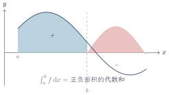
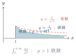
题型总结
不定积分定义求未知函数（例8.1）：$\int f=F+C$ 两边求导或取特定值比较系数;
原函数存在性与定积分存在性的判断（例8.2、8.3、8.5）：按“第一类/无穷间断点无原函数;
有界有限间断点可积”逐点排查;几何意义比大小（例8.4、8.9、8.10）：利用反函数图像、换元、保号性比较积分值;
凑定积分定义求 $n$ 项和极限（例8.6）：提出 $\frac1n$、凑出 $\frac in$，化为 $\int_0^1$;
凑不出时放缩后夹逼;积分不等式与保号性（例8.7、8.8）：连续不恒为零则积分严格大于零;
中值定理的两种证明（拉格朗日法、罗尔法）;由被积函数图像画变限积分图像（例8.11）：$F$ 单调性看 $f$ 符号、$F$ 凹凸性看 $f$ 增减、$F$ 极值点在 $f$ 零点处;
变限积分的连续可导性讨论（例8.12、8.13）：按上方知识点框③④⑤分类讨论（含取整函数）;
反常积分敛散性判别（例8.14–8.19）：与 $p$ 积分比较（极限形式为主）;
含参数时按 $p$ 的范围讨论;
注意拆分奇点。
注意事项与易错点
“原函数存在”与“定积分存在”互相独立：跳跃间断函数可积但无原函数;
$f(x)=\begin{cases}2x\sin\frac1x-\cos\frac1x,&x\neq0,\\[4pt] 0,&x=0\end{cases}$ 有原函数但含振荡间断点（在含 $0$ 的区间上不可积）。导函数的间断点只能是第二类：若 $f'$ 在一点极限存在则 $f'$ 在该点连续;
故“$f'$ 有第一类间断点”是不可能命题（达布定理：导函数虽可不连续但具介值性）。保号性用严不等号需额外条件：“$f\ge g$”只能得“$\le$”;
要得“$<$”必须“$f\ge g$ 且不恒相等”（连续时）。积分中值定理：$\xi\in[a,b]$（闭区间），考研可直接使用结论;
“推广形式”中 $\xi$ 取开区间时需另行说明。凑定积分定义的标志：和式含 $\frac in$、$\frac1n$（或 $\frac in\cdot\frac1n$ 结构）;
常见结果 $\sum\limits_{i=1}^{n}\frac{1}{n+i}=\int_0^1\frac{\mathrm{d}x}{1+x}=\ln2$，$\sum\limits_{i=1}^{n}\frac{n}{n^{2}+i^{2}}=\int_0^1\frac{\mathrm{d}x}{1+x^{2}}=\frac\pi4$。变限积分在可去间断点可导但导数值是极限值：$F'(x_0)=\lim_{x→ x_0}f(x)$，与 $f(x_0)$ 无关，此时 $F$ 不是 $f$ 的原函数——常考判断题。
反常积分一个积分只允许一个奇点：含多个奇点（含 $∞$ 与瑕点并存）必须拆分，全部收敛才收敛;
$\int_{-∞}^{+∞}$ 同理必须拆分。奇偶性用于反常积分的前提是收敛：如 $\int_{-∞}^{+∞}\frac{x \mathrm{d}x}{1+x^{2}}$ 发散，不能用奇函数得 $0$。
无界必不可积;
有限区间上的单调函数必可积。
第9讲 一元函数积分学的计算
知识结构与考情
积分计算是全卷计算的最大分值来源。
方法体系分三层：不定积分（凑微分法、第二类换元法、分部积分法、有理函数与三角有理式的程序化算法）;
定积分技巧（牛顿–莱布尼茨公式、对称性、周期性、区间再现公式、华里士公式）;
变限积分与反常积分的计算（变限求导、$\Gamma$ 函数）。
“反对幂指三”分部选元原则与“区间再现”是张宇体系的两张王牌。
核心知识点
基本积分公式表
三大积分方法
原理：$\displaystyle\int f[g(x)]g'(x) \mathrm{d}x=\int f[g(x)] \mathrm{d}[g(x)]\overset{u=g(x)}{=}\int f(u) \mathrm{d}u.$
$\displaystyle\int f(x) \mathrm{d}x\xrightarrow{ x=g(u) }\int f[g(u)]g'(u) \mathrm{d}u$，要求 $g(u)$ 单调可导。
常用代换：
选 $u$ 原则：“反对幂指三”（反三角、对数优先作 $u$，指数、三角优先作 $v'$，求导后变简单）。
表格法（多次分部）：$\displaystyle\int uv^{(n+1)}\mathrm{d}x=uv^{(n)}-u'v^{(n-1)}+⋯+(-1)^{n}u^{(n)}v+(-1)^{n+1}\int u^{(n+1)}v \mathrm{d}x$——对角线错位相乘、符号正负交替。
循环积分：$\displaystyle\int e^{ax}\sin bx \mathrm{d}x=\frac{e^{ax}(a\sin bx-b\cos bx)}{a^{2}+b^{2}}+C,\quad \int e^{ax}\cos bx \mathrm{d}x=\frac{e^{ax}(a\cos bx+b\sin bx)}{a^{2}+b^{2}}+C.$
假分式先除化为“$\text{多项式}+\text{真分式}$”;
真分式分母因式分解后拆最简分式：
例：$\displaystyle\frac{4x^{2}-6x-1}{(x+1)(2x-1)^{2}}=\frac{A}{x+1}+\frac{B}{2x-1}+\frac{C}{(2x-1)^{2}}$;
特值法/比较系数法定 $A,B,C$。
常用结果：$\displaystyle\int\frac{\mathrm{d}x}{(1+x^{2})^{2}}=\frac{x}{2(1+x^{2})}+\frac12\arctan x+C$。
定积分的专属技巧
奇偶对称：$\displaystyle\int_{-a}^{a}f \mathrm{d}x=\begin{cases}2\int_0^a f \mathrm{d}x,&f\text{偶}\\[4pt]
0,&f\text{奇}\end{cases}$ 周期性（$f$ 以 $T$ 为周期）：$\displaystyle\int_a^{a+T}f \mathrm{d}x=\int_0^{T}f \mathrm{d}x=\int_{-\frac T2}^{\frac T2}f \mathrm{d}x$。
区间再现公式：$\displaystyle\int_a^b f(x) \mathrm{d}x=\int_a^b f(a+b-x) \mathrm{d}x$（作 $x=a+b-t$），两式相加常使复杂积分化简，如
常用推论：$\displaystyle\int_0^{\frac\pi2}f(\sin x) \mathrm{d}x=\int_0^{\frac\pi2}f(\cos x) \mathrm{d}x$;
连续周期奇函数满足 $\int_0^T f \mathrm{d}x=0$。
上下限含参求导：
被积函数含 $x$ 时，先换元把 $x$ 移出积分号（如 $\int_0^x(x-t)f(t) \mathrm{d}t$ 先拆为 $x\int_0^x f-\int_0^x tf$）。
原函数奇偶性：$f$ 连续奇 $⇒$ 其全体原函数均为偶函数;
$f$ 连续偶 $⇒$ 只有 $\int_0^x f(t) \mathrm{d}t$ 是奇函数，其余原函数非奇非偶。
原函数周期性：$f$ 以 $T$ 为周期且 $\int_0^T f \mathrm{d}x=0\iff$ $\int_0^x f \mathrm{d}t$ 以 $T$ 为周期;
恒有 $F(x)-\frac{x}{T}\int_0^T f \mathrm{d}x$ 为周期函数。
题型总结
凑微分（例9.1、9.2）：识别复合结构，套 13 条凑微分公式;
三角代换与根式代换（例9.3、9.5、9.7、9.13、9.27）：按代换表消根号，注意回代三角形;
换元 + 分部综合（例9.4、9.6、9.8）：先换元化简再分部，或循环积分;
分部积分与循环抵消（例9.11）：$e^{ax}\sin bx$、$\arctan x$ 型;
三角恒等变换配合;有理函数积分（例9.8–9.10）：假分式化真分式、部分分式分解、特值法;
分段函数积分（例9.15、9.9）：分段积分、原函数连续性定常数;
牛顿–莱布尼茨公式的分段使用;定积分定义求和式极限（例9.12）与含未知定积分的方程（例9.2'）;
对称性、周期性、区间再现（例9.13、9.14、9.16–9.18）：先看区间对称、被积函数结构，再决定用哪张王牌;
变限积分综合（例9.19–9.22、9.25）：求导、切线、泰勒系数、极值、周期性;
原函数奇偶周期性证明（例9.23、9.24）：换元 $t→-t$ 对照定义;
反常积分与 $\Gamma$ 函数（例9.26–9.29）：瑕点极限化、$\Gamma$ 递推与特殊值。
注意事项与易错点
第二类换元必须回代：不定积分结果要用原变量表示（画辅助直角三角形最稳妥）;
定积分换元必须同时换上下限，无需回代。三角代换的开方绝对值：$x=a\sin t$ 时 $\sqrt{a^{2}-x^{2}}=a|\cos t|$，取 $t\in(-\frac\pi2,\frac\pi2)$ 可去绝对值;
区间组合不同，绝对值处理不同，切勿混用。分部选 $u$ 口诀“反对幂指三”：越靠前越作 $u$;
出现两类不同函数相乘（如 $x^{2}e^{x}$、$x\ln x$、$e^{x}\cos x$）才用分部。循环积分勿丢常数：两次分部回到原积分时移项要变号，右边除以 $(1+a^{2})$ 类系数。
牛顿–莱布尼茨公式的适用前提：$F(x)$ 须是 $f$ 在整个 $[a,b]$ 上的原函数;
$f$ 含第一类间断点时须分段积分（如 $\int_{-1}^{1}|x| \mathrm{d}x$ 类、含 $\frac1x$ 类切不可直接套）。分段函数不定积分：各段分别积分后，利用原函数在分段点连续调整常数。
变限积分求导的前提：被积函数中只含积分变量 $t$;
含 $x$ 时先拆分或换元移出积分号，这是最高频失分点。对称区间先想奇偶性，再想区间再现;
$[-a,a]$ 上 $\int_{-a}^{a}\frac{\sin x}{1+x^{2}}\mathrm{d}x=0$ 类零化最省时。华里士公式只能用于 $[0,\frac\pi2]$ 上的纯 $\sin^{n}$、$\cos^{n}$;
其他区间先换元平移，$\sin^{n}x\cos^{m}x$ 用 $\sin^{2}=1-\cos^{2}$ 化简或换元。反常积分：先找奇点，一个积分一个奇点;
瑕点在内部必须拆分;
收敛才谈奇偶性技巧。周期函数的变限积分：$\int_a^x f \mathrm{d}t=$ 常数 $+$ 周期函数;
只有 $\int_0^T f=0$ 时才是周期函数。
第10讲 一元函数积分学的应用（一）——几何应用
知识结构与考情
本讲是定积分几何应用的工具箱，核心是“微元法”思想：面积（直角、参数、极坐标）、旋转体体积（圆盘法、柱壳法、绕任意直线旋转）、弧长（三种坐标）、旋转曲面侧面积、函数平均值与平面图形形心、已知平行截面面积的立体体积。
公式必须“理解 $+$ 熟记”，其中柱壳法与绕任意直线旋转公式是拉开差距的考点。
核心知识点
平面图形的面积
直角坐标：$S=\displaystyle\int_a^b\bigl|y_1(x)-y_2(x)\bigr| \mathrm{d}x$（上下之差）。
参数方程：曲线 $\begin{cases}x=x(t)\\[4pt]
y=y(t)\end{cases}$，则 $S=\displaystyle\int_{t_1}^{t_2}\bigl|y(t) x'(t)\bigr| \mathrm{d}t$（本质是换元 $x=x(t)$）。
极坐标：曲边扇形 $S=\dfrac12\displaystyle\int_{\alpha}^{\beta}r^{2}(\theta) \mathrm{d}\theta$;
两曲线之间 $S=\dfrac12\displaystyle\int_{\alpha}^{\beta}\bigl|r_1^{2}(\theta)-r_2^{2}(\theta)\bigr| \mathrm{d}\theta$（微元 $\mathrm{d}S=\frac12r^{2} \mathrm{d}\theta$）。
旋转体的体积
圆盘法（绕 $x$ 轴）：$V_x=\displaystyle\int_a^b\pi y^{2}(x) \mathrm{d}x$;
绕 $y$ 轴且以 $y$ 为积分变量：$V_y=\displaystyle\int_c^d\pi x^{2}(y) \mathrm{d}y$。
柱壳法（长方体法）：$[a,b]$ 上曲边梯形（$y=f(x)\ge0$）绕 $y$ 轴旋转：
绕任意直线旋转：曲线 $y=f(x)$（$a\le x\le b$）绕不过它的直线 $L_0:Ax+By+C=0$ 旋转一周：
已知平行截面面积：$V=\displaystyle\int_a^b A(x) \mathrm{d}x$（圆盘法是其 $A=\pi f^{2}$ 的特例）。
弧长、侧面积、平均值与形心
弧长微元 $\mathrm{d}s=\sqrt{(\mathrm{d}x)^{2}+(\mathrm{d}y)^{2}}$：
平均值：$\bar y=\dfrac{1}{b-a}\displaystyle\int_a^b f(x) \mathrm{d}x$（积分中值定理即“$\exists \xi$ 使 $f(\xi)=\bar y$”）。
平面图形形心（区域 $D: 0\le y\le f(x), a\le x\le b$）：
记忆：分母是面积，分子是“坐标 $\times$ 截线长”的积分;
$\bar y$ 的分子出现 $\frac12$ 源于竖条的形心在半高处。
旋转体体积的形心应用（古尔金定理思想）：$V=2\pi\bar x\cdot S$（旋转体体积 $=$ 形心所走路程 $\times$ 截面面积）。
典型图像
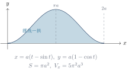
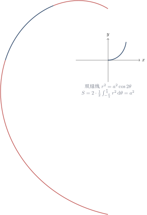
题型总结
求平面图形面积（例10.1–10.4）：普通曲线围成、摆线一拱（参数方程）、双纽线（极坐标）、$e^{-x}\sin x$ 与 $x$ 轴（无穷区间取绝对值）;
旋转体体积（例10.5–10.7）：圆盘法、反函数换元技巧、切线与曲线围成区域绕垂直线/斜线旋转;
平均值（例10.8）：直接用 $\bar y=\frac{1}{b-a}\int_a^b f \mathrm{d}x$，常配周期性或中值定理;
形心（例10.9）：套形心公式，分母为面积;
弧长（例10.10、10.11）：直角坐标、极坐标（阿基米德螺线 $r=\theta$）;
旋转曲面侧面积（例10.12、10.13）：直角坐标、星形线参数方程（利用对称性乘倍数）;
截面法求体积（例10.14）：非圆截面或绕斜线旋转，$V=\int A(x) \mathrm{d}x$。
注意事项与易错点
面积一律取绝对值：$S=\int|f-g| \mathrm{d}x$，若上下位置反转需分段;
$e^{-x}\sin x$ 与 $x$ 轴围成面积是 $\int_0^{+∞}|e^{-x}\sin x| \mathrm{d}x$，不能直接积分。极坐标面积带 $\frac12$：$\mathrm{d}S=\frac12r^{2}\mathrm{d}\theta$，双纽线 $r^{2}=a^{2}\cos2\theta$ 的面积为 $a^{2}$（利用对称性算一半乘 $2$）。
柱壳法与圆盘法选优：绕 $y$ 轴而函数以 $x$ 表达时，柱壳法 $2\pi\int x|y| \mathrm{d}x$ 常免于反解 $x=x(y)$;
两法结果一致可互验。绕任意直线旋转：套公式前先画图确认直线与曲线不相交;
点线距离 $\frac{|Ax+By+C|}{\sqrt{A^{2}+B^{2}}}$ 是公式来源。弧长被积函数是根式：先配方再积分;
摆线一拱弧长 $8a$、星形线全长 $6a$ 等经典结果可直接引用。侧面积忘不了 $|y|$ 与 $\mathrm{d}s$：$S_{\text{侧}}=2\pi\int|y| \mathrm{d}s$，对 $x$ 积分时根号里是 $1+y'^{2}$，与弧长公式同源。
形心公式中 $\bar y$ 的 $\frac12$ 别丢：竖条微元形心在 $\frac{f(x)}2$ 处。
利用对称性简化：星形线、摆线等对称图形算一部分乘倍数;
再结合形心公式可速算旋转体体积。反函数换元技巧：绕 $x$ 轴不便积分时，改用 $V=2\pi\int y x(y) \mathrm{d}y$ 型（以 $y$ 为变量）转换积分对象。
第11讲 一元函数积分学的应用（二）——积分等式与积分不等式
知识结构与考情
本讲是积分版的中值与不等式证明题，与第6讲（微分版）对偶：积分中值定理及其推广、含变限积分的极限（夹逼、分部、周期性）、积分等式的证明（构造变限积分辅助函数）、积分不等式的证明（单调性法、拉格朗日/泰勒法、牛顿–莱布尼茨法）。
考研常作为压轴证明题，套路性强，需把“联系 $f$ 与 $f'$ 的两条通道”刻进肌肉记忆。
核心知识点
积分中值定理及其推广
设 $f(x),g(x)$ 在 $[a,b]$ 上连续，且 $g(x)$ 在 $[a,b]$ 上不变号，则存在 $\xi\in(a,b)$，使得
当 $g(x)\equiv1$ 时即为普通积分中值定理 $\displaystyle\int_a^b f(x) \mathrm{d}x=f(\xi)(b-a)$（$\xi\in[a,b]$，连续时加强为开区间）。
联系 $f$ 与 $f'$ 的两条通道（本讲灵魂）
通道一（微分学）：拉格朗日中值定理
通道二（积分学）：牛顿–莱布尼茨公式
分部积分另一经典结论：$\displaystyle\Bigl|\int_0^{2\pi}f(x)\sin nx \mathrm{d}x\Bigr|\le\frac{2}{n}\bigl[f(2\pi)-f(0)\bigr]$（$f$ 单调增时）。
常用结论
含参积分 $\int_0^1 f(x)e^{-nx}\mathrm{d}x$ 型：中值定理得 $f(\xi_n)\int_0^1 e^{-nx}\mathrm{d}x$，注意 $\xi_n$ 依赖 $n$，需对 $f(\xi_n)$ 作一致估计。
题型总结
推广中值定理的证明与应用（例11.1）：构造 $F(x)=f(x)\int_a^x g-f(\xi)⋯$ 或单调性证明;
用于求含参积分极限;积分与微分学定理联用（例11.2）：推广中值 $+$ 罗尔 $+$ 拉格朗日证明 $f''(\xi)<0$;
变限积分的极限（例11.3、11.5）：分部积分 $+$ 放缩夹逼;
周期性 $+$ 取整函数平移;比较积分大小与数列极限（例11.4）：比较被积函数、利用 $\int_0^1 t^n\ln t \mathrm{d}t$ 类结论;
积分等式证明（例11.6）：分部积分把 $f''$ 转移到 $g$ 上，或构造变限积分函数用罗尔;
积分不等式·单调性法（例11.7）：上限变量化构造 $F(x)$，求导定号;
积分不等式·微分中值法（例11.8）：拉格朗日中值定理 $+$ 区间拆分放缩;
积分不等式·泰勒公式法（例11.9）：在指定点展开，代端点信息相加;
积分不等式·分部/牛顿–莱布尼茨法（例11.10、11.11）：用通道二把 $f$ 写成 $f(a)+\int f'$。
注意事项与易错点
推广中值定理的 $\xi\in(a,b)$ 是开区间，且要求 $g$ 不变号（$g$ 变号时结论可以失效，如 $\int_{-\pi}^{\pi}\sin x\cdot\cos x \mathrm{d}x=0$ 但不存在 $\xi$ 使 $\cos\xi\int\sin x \mathrm{d}x=0$ 的推理成立）。
中值点 $\xi_n$ 依赖 $n$：由中值定理求极限时不能直接令 $f(\xi_n)→ f(\xi)$，需用 $f$ 的有界性 $+$ 夹逼。
单调性法三步曲：上限变量化 $→$ 移项构造 $F(x)$ $→$ 求导判号（常再用一次中值定理处理 $F'$ 中的积分项）。
放缩来源：被积函数有界 $|f|\le M$、积分不等式性质、$|f'|\le M$、中值定理（区间拆分后用）。
周期函数 $+$ 取整函数：$f(x-[x])$ 型先平移到一个周期上，再夹逼尾项。
泰勒法的关键：选好展开点（常取区间中点或已知函数值处），代两端点后相加消去一阶项。
第12讲 一元函数积分学的应用（三）——物理应用与经济应用
知识结构与考情
本讲是定积分物理应用的工具箱（数一、数二为主）：变力做功、抽水做功、静水压力、引力四大微元法应用，以及质心与形心、古尔金（Pappus）定理;
经济侧（数三）用牛顿–莱布尼茨公式由边际函数还原总量函数。
解题万能模板：建系 $→$ 取微元 $→$ 写微元表达式 $→$ 积分。
核心知识点
做功问题
变力沿直线做功：力 $F(x)$ 方向沿 $x$ 轴正向，物体由 $a$ 移到 $b$：
抽水做功：将容器中水全部抽出，水深 $x$ 处水平截面面积为 $A(x)$，水的密度 $\rho$，重力加速度 $g$：
关键：写出 $A(x)$（由容器形状确定），其余量固定。
静水压力与引力
静水压力：垂直浸没的平板一侧所受水压力（压强随深度变化）：
其中 $x$ 为水深，$f(x)-h(x)$ 为该深度处平板的水平宽度。
微元 $\mathrm{d}P=\rho g x\cdot\text{宽度}\cdot\mathrm{d}x$。
引力：长为 $l$、线密度 $\mu$ 的细棒对距离 $a$ 处质量为 $m$ 的质点（沿棒方向）：
质心、形心与古尔金定理
质心与形心：质心是质量分布中心（固有物理量）;
形心是几何中心（固有几何量）;
密度均匀（常数）时二者重合。
$n$ 个质点：$\bar x=\dfrac{\sum\limits_{i=1}^{n} x_i m_i}{\sum\limits_{i=1}^{n} m_i}$。
曲线段 $L:y=f(x) (a\le x\le b)$、线密度 $\rho(x)$ 绕直线 $L_0:ax+by+c=0$ 的静力矩：
古尔金第一定理：曲线段绕不相交直线旋转一周的侧面积 $=$ 弧长 $\times$ 形心所走路程：
古尔金第二定理：平面图形绕不相交直线旋转一周的旋转体体积 $=$ 面积 $\times$ 形心所走路程：$V=2\pi\bar x\cdot S$。
经济应用（数三）
固定成本 $C_0$、边际成本 $C'(Q)$、边际收益 $R'(Q)$：
平均收益 $\bar R(Q)=\frac{R(Q)}{Q}$;
最大利润在 $MR=MC$（即 $L'(Q)=0$）处取得。
题型总结
变力做功（例12.1）：直接套 $W=\int F \mathrm{d}x$，注意力的方向与正负;
抽水做功（例12.2）：确定 $A(x)$（圆锥容器 $A(x)=\pi r^{2}(x)$，半球形水池 $A(x)=\pi(2Rx-x^{2})$ 等）;
静水压力（例12.3）：等腰直角三角形平板铅直浸没——写深度 $x$ 处宽度，微元积分;
经济应用（例12.4）：边际成本 $+$ 需求弹性求利润最大化定价;
古尔金定理速算：如单位圆绕 $x=2$ 旋转，表面积与体积由“路程 $\times$ 弧长/面积”直接写出。
注意事项与易错点
微元法三要素：建系（原点与正向影响 $x$ 的含义）、微元表达式、积分上下限——绝大多数错误出在“微元中力或压强所乘的位移”上。
抽水做功的 $x$ 是“路程”不是“深度原点距离”：水从深度 $x$ 处抽到池口，路程按建立的坐标系写清楚。
静水压力乘的是“水深 $x$”（压强 $\rho gx$），别与抽水做功混淆——两者结构相似但物理量不同。
引力是矢量：斜向引力要分解到指定方向再积分（本讲只考共线情形）。
质心 $\neq$ 形心（一般情形）;
只有密度均匀才相等。
曲线段的形心公式分母是弧长 $\int\mathrm{d}s$。古尔金定理前提：旋转轴不得穿过（相交于）曲线或图形。
经济还原总量别忘加固定成本 $C_0$：$C(Q)=\int_0^Q C' \mathrm{d}t+C_0$，而 $R(Q)$ 无“固定收益”。
经济应用中微分学比积分学考得更频繁（张宇原话：“微分学中经济应用较多，积分学中物理应用较多”）。
第13讲 多元函数微分学
知识结构与考情
本讲将微分学从一元推广到多元，主线为：二重极限与连续 $→$ 偏导数 $→$ 全微分与可微 $→$ 复合与隐函数求导 $→$ 极值与最值（含条件极值）。
概念题核心是“极限、连续、偏导、可微”的强弱关系图;
计算题核心是抽象复合函数的高阶偏导（“$f'_1,f'_2$ 换汤不换药”）与隐函数偏导;
解答题核心是无条件极值（$AC-B^{2}$ 判别法）与条件极值（拉格朗日乘数法）。
核心知识点
二重极限与连续
二重极限：若对任意 $\varepsilon>0$，存在 $\delta>0$，当 $0<\sqrt{(x-x_0)^{2}+(y-y_0)^{2}}<\delta$ 时恒有 $|f(x,y)-A|<\varepsilon$，则 $\lim\limits_{(x,y)→(x_0,y_0)}f(x,y)=A$。
$(x,y)→(x_0,y_0)$ 的方式有无穷多种（路径任意）。
判不存在：沿某一路径极限不存在，或两条路径极限值不同 $⇒$ 二重极限不存在。
连续：$\lim\limits_{(x,y)→(x_0,y_0)}f(x,y)=f(x_0,y_0)$（考研不要求间断点分类）。
二元初等函数在其定义区域（开区域）内连续。
二重极限不含 $x→ x_0, y→ y_0$ 先后的次序概念，与“二次极限”（先 $x$ 后 $y$）不是一回事。
偏导数与全微分
偏导数（固定另一变量的一元导数）：
全微分：若 $\Delta z=A\Delta x+B\Delta y+o(\rho)$，$\rho=\sqrt{\Delta x^{2}+\Delta y^{2}}$，则 $f$ 在该点可微，且 $\mathrm{d}z=A \mathrm{d}x+B \mathrm{d}y=f'_x \mathrm{d}x+f'_y \mathrm{d}y$。
可微的必要条件：偏导数都存在（$A=f'_x$，$B=f'_y$）。
可微的充分条件：偏导数都存在且连续。
混合偏导数相等定理：若 $f''_{xy}$ 与 $f''_{yx}$ 均连续，则 $f''_{xy}=f''_{yx}$（求导次序无关）。
偏导数连续 $⇒$ 可微 $⇒$ $\begin{cases}\text{连续} ⇒ \text{极限存在}\\[1pt]
\text{偏导数存在}\end{cases}$ 反向箭头均不成立。
一元函数：可微 $\iff$ 可导 $⇒$ 连续;
多元函数：可微 $⇒$ 偏导存在、连续，反向均不成立;
“偏导连续 $⇒$ 可微”是充分条件，偏导不连续时仍可能可微（用定义验证）。
具体关系见下方图。
复合函数与隐函数求导
设 $z=f(u,v)$，$u=\varphi(x,y)$，$v=\psi(x,y)$：
单中间变量 $z=f(u),u=u(t)$：$\dfrac{\mathrm{d}z}{\mathrm{d}t}=f'(u)\dfrac{\mathrm{d}u}{\mathrm{d}t}$（全导数）。
抽象函数记号：$f'_1,f'_2$ 表示对第 1、2 位置的变量求导，如 $f'_x(x,e^{x})=f'_1(x,e^{x})$;
“换汤不换药”——求导后的新函数 $f'_1,f'_2$ 与原 $f$ 复合结构完全相同。
全微分形式不变性：无论 $u,v$ 是自变量还是中间变量，$\mathrm{d}z=f'_u \mathrm{d}u+f'_v \mathrm{d}v$ 恒成立。
区域 $D$ 上 $\mathrm{d}f\equiv0\iff f\equiv C$。
一个方程：$F(x,y)=0$ 确定 $y=y(x)$（需 $F'_y\neq0$）：$\dfrac{\mathrm{d}y}{\mathrm{d}x}=-\dfrac{F'_x}{F'_y}$。
$F(x,y,z)=0$ 确定 $z=z(x,y)$（需 $F'_z\neq0$）：
方程组的隐函数组：由 $\begin{cases}F(x,y,u,v)=0\\[4pt] G(x,y,u,v)=0\end{cases}$ 确定 $u(x,y),v(x,y)$：对 $x$ 求偏导解线性方程组，或用雅可比行列式 $J=\dfrac{\partial(F,G)}{\partial(u,v)}\neq0$ 时 $\dfrac{\partial u}{\partial x}=-\dfrac{1}{J}\dfrac{\partial(F,G)}{\partial(x,v)}$ 等。
极值与最值
必要条件：$f'_x(x_0,y_0)=0$，$f'_y(x_0,y_0)=0$（驻点）;
偏导数不存在的点也可能是极值点（如 $z=\sqrt{x^{2}+y^{2}}$ 在原点）。
充分条件：设 $f$ 在 $(x_0,y_0)$ 邻域内有二阶连续偏导数且为驻点，记
$\Delta>0$ 且 $A>0$：极小;
$\Delta>0$ 且 $A<0$：极大;
$\Delta<0$：不是极值;
$\Delta=0$：方法失效（需另想办法）。
记忆：“大极大、小极小、负不是、零失效”（$\Delta$ 大于零看 $A$，小于零不是，等于零失效）。
一个约束：求 $f(x,y)$ 在约束 $\varphi(x,y)=0$ 下的极值，构造
两个约束（三元）：$L(x,y,z,\lambda,\mu)=f+\lambda\varphi+\mu\psi$，五个方程联立。
闭区域最值步骤：(1) 内部驻点（含偏导不存在的点）; (2) 边界上条件极值（拉格朗日乘数法或代入消元）; (3) 比较所有候选点的函数值。
依据：有界闭区域上连续函数必有最值。
若 $\Gamma$ 为光滑闭曲线，$Q$ 为 $\Gamma$ 外一点，$P_1,P_2$ 分别为 $\Gamma$ 上离 $Q$ 最近、最远的点，则 $P_1Q$、$P_2Q$ 分别垂直于 $\Gamma$ 在 $P_1,P_2$ 处的切线;
两条不相交光滑闭曲线之间的最远（近）点连线是它们的公垂线。
可用于快速定位候选点。
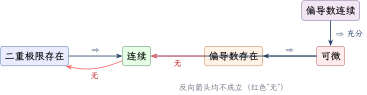
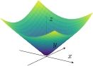
题型总结
二重极限存在性判断（例13.1）：夹逼（$|xy|\le\frac{x^{2}+y^{2}}{2}$）、路径法否定;
分段函数连续性求参（例13.2）：连续定义 $+$ 等价无穷小;
偏导数存在性（含绝对值）（例13.3）：在定点必须用定义;
变限积分的偏导（例13.4）：莱布尼茨公式（上下限含参时对参数求导）;
先极限后代入求偏导值（例13.5）;
偏微分方程求原函数（例13.6、13.22）：由 $f'_x,f'_y$ 积分还原 $f$，用另一方程定常数;
可微性与参数确定（例13.7、13.8）：$\lim\limits_{(\Delta x,\Delta y)→(0,0)}\frac{\Delta z-(f'_x\Delta x+f'_y\Delta y)}{\rho}=0$ 判可微;
抽象复合函数二阶混合偏导（例13.9、13.10）：$f'_1,f'_2$ 再求导得 $f''_{11},f''_{12},f''_{22}$，“换汤不换药”;
变量代换化简偏微分方程（例13.11）：求参数使方程变为标准形式;
隐函数求偏导与全微分（例13.12、13.15、13.16）：公式法、直接法、全微分法三选一;
隐函数存在定理条件辨析（例13.13、13.14）：$F'_y\neq0$ 的充分性/必要性;
二元极值的判断与求解（例13.17–13.19）：$AC-B^{2}$ 判别法、隐函数极值（$\frac{\partial z}{\partial x}=0$ 联立原方程）;
条件极值与闭区域最值（例13.20–13.22）：拉格朗日乘数法、垂线原理、边界代入比较。
注意事项与易错点
路径法判极限不存在：取 $y=kx$ 不够充分（应取含 $k$ 的曲线族并说明对一切 $k$ 极限不同，或取 $y=kx^{2}$ 等）。
偏导存在 $\not⇒$ 连续、$\not⇒$ 可微;
可微 $⇒$ 偏导存在且连续中后者是可微的充分条件而非必要条件。在定点求偏导必须用定义（尤其含绝对值、分段函数）;
偏导函数连续时才可“先求导函数后代入”。抽象复合函数高阶偏导：$f'_1,f'_2$ 仍是复合函数，二阶求导时链式法则“照旧”，最易漏项;
$f''_{12}=f''_{21}$ 可用于化简。隐函数公式法的 $F'_x$ 是把 $y,z$ 视为常数对 $x$ 求导，与“解出 $z$ 后求导”意义不同，不要混淆变量地位。
全微分求隐函数：$\mathrm{d}F=0$ 中把 $\mathrm{d}z$ 解出来，一步得到两个偏导，常比公式法快。
极值判别：$\Delta=0$ 失效时用定义或特殊路径判断;
驻点处 $A,C$ 同号且 $\Delta>0$ 才是极值。条件极值别忘比较：拉格朗日乘数法只给候选点，封闭约束上还需比较端点（约束不封闭时）函数值。
闭区域最值：内部驻点 $+$ 边界最值 $+$ 不可导点，三者一起比较;
椭圆域常用参数化 $x=2\cos t,y=\sin t$ 代入。区域上 $f'_x=0$ 不推出 $f$ 与 $x$ 无关（除非区域是矩形/凸连通且处处成立），判别题常见陷阱。
第14讲 二重积分
知识结构与考情
二重积分是一元定积分在二维的推广，计算流程高度程式化：定义与性质（六条性质 $+$ 中值定理）$→$ 对称性预处理（普通对称性看奇偶、轮换对称性看结构）$→$ 坐标系选择（直角：X型/Y型; 极坐标：三种位置关系）$→$ 化累次积分。
“先对称、后选系、再定序”是解题总纲;
交换积分次序（含被积函数不可积情形）是必考题型。
核心知识点
定义、几何意义与性质
几何意义：$f\ge0$ 时表示以曲面 $z=f(x,y)$ 为顶、$D$ 为底的曲顶柱体体积;
$f$ 变号时为各部分体积的代数和。
$\displaystyle\iint_D \mathrm{d}\sigma=A$（区域面积）。
存在性：$f$ 在有界闭区域 $D$ 上连续 $⇒$ 可积。
设 $f,g$ 在有界闭区域 $D$ 上可积，$A$ 为 $D$ 的面积：
线性：$\displaystyle\iint_D(k_1f\pm k_2g) \mathrm{d}\sigma=k_1\iint_D f \mathrm{d}\sigma\pm k_2\iint_D g \mathrm{d}\sigma$;
可加性：$D=D_1\cup D_2$（内部不重叠）$⇒\displaystyle\iint_D=\iint_{D_1}+\iint_{D_2}$;
保号性：$f\le g$ 于 $D$ $⇒\displaystyle\iint_D f\le\iint_D g$;
特别 $\Bigl|\iint_D f\Bigr|\le\iint_D|f|$;估值定理：$m\le f\le M$（$m,M$ 为最小、最大值）$⇒ mA\le\displaystyle\iint_D f \mathrm{d}\sigma\le MA$;
中值定理：$f$ 连续 $⇒$ 存在 $(\xi,\eta)\in D$，使 $\displaystyle\iint_D f \mathrm{d}\sigma=f(\xi,\eta)\cdot A$;
可积必有界。
对称性（预处理第一思维）
设 $D_1$ 为 $D$ 的对称半部分：
| $D$ 关于 | $f$ 满足 | 结论 |
| $y$ 轴 | $f(-x,y)=f(x,y)$（偶） | $\iint_D f=2\iint_{D_1}f$ |
| $y$ 轴 | $f(-x,y)=-f(x,y)$（奇） | $\iint_D f=0$ |
| $x$ 轴 | $f(x,-y)=\pm f(x,y)$ | 同上（$D_1$ 取上侧） |
| 原点 | $f(-x,-y)=\pm f(x,y)$ | 同上 |
| $x=a$ | $f(2a-x,y)=\pm f(x,y)$ | 同上（$D_1$ 取 $x\ge a$ 侧） |
| $y=a$ | $f(x,2a-y)=\pm f(x,y)$ | 同上 |
| $y=x$ | $f(x,y)=\pm f(y,x)$ | 同上（$D_1$ 取一侧） |
口诀：“代对称点入 $f$：相等倍增，相反为零”。
若把 $x,y$ 对调后区域表达式不变（$D$ 关于 $y=x$ 对称），则
特别地，若 $f(x,y)+f(y,x)=a$（常数），则
典型应用：$\displaystyle\iint_D\frac{a e^{\sin x}+b e^{\sin y}}{e^{\sin x}+e^{\sin y}} \mathrm{d}\sigma=\frac{a+b}2A$。
计算：直角坐标与极坐标
X型（先 $y$ 后 $x$）：$D: \varphi_1(x)\le y\le\varphi_2(x), a\le x\le b$
Y型（先 $x$ 后 $y$）：$D: \psi_1(y)\le x\le\psi_2(y), c\le y\le d$
定限口诀：后积分的变量先定限（外层限为常数），先积分的变量后定限（内层限可为外层变量的函数）。
极点在区域外：$\displaystyle\iint_D f=\int_{\alpha}^{\beta}\mathrm{d}\theta\int_{r_1(\theta)}^{r_2(\theta)}f(r\cos\theta,r\sin\theta) r \mathrm{d}r$;
极点在边界上：$\displaystyle\iint_D f=\int_{\alpha}^{\beta}\mathrm{d}\theta\int_{0}^{r(\theta)}f(r\cos\theta,r\sin\theta) r \mathrm{d}r$;
极点在内部：$\displaystyle\iint_D f=\int_{0}^{2\pi}\mathrm{d}\theta\int_{0}^{r(\theta)}f(r\cos\theta,r\sin\theta) r \mathrm{d}r$. 选极坐标的判据（满足其一优先）：被积函数含 $x^{2}+y^{2}$、$\frac yx$、$\arctan\frac yx$ 等;
区域为圆域、圆环、扇形或其一部分。
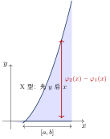
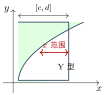
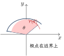
题型总结
比较积分大小（例14.1、14.3）：保号性 $+$ 区域包含关系 $+$ 对称性（被积函数 $\ge0$ 的区域积分大）;
含参二重积分求导/求极限（例14.2）：中值定理 $\iint_D f=f(\xi,\eta)A$ 转化后用定义;
对称性与轮换对称性化简（例14.4、14.8）：$\frac{f(x,y)+f(y,x)}2$ 技巧;
交换积分次序（例14.5–14.7）：画区域定限;
被积函数含 $\frac{\sin x}{x}$、$e^{-y^{2}}$、$\frac{\ln(1+x)}x$ 等“积不动”项时必须换序;直角坐标直接计算：内层易积、少分块定序;
极坐标计算（例14.9）：圆域、$e^{-x^{2}}$、$\sqrt{x^{2}+y^{2}}$ 型必用极坐标，$r$ 从 $r_1(\theta)$ 到 $r_2(\theta)$;
分段函数与绝对值：按表达式分段拆区域，绝对值找零点线分区;
结合变限积分与拐点（例14.10）：交换次序后 $F(x)=\int_0^x f(t) \mathrm{d}t$ 求导判凹凸;
无界区域反常二重积分（例14.13–14.15）：化为累次反常积分，或用概率密度思想（$\iint e^{-x^{2}-y^{2}}$ 型）;
二重积分等式/不等式证明（例14.16–14.20）：轮换对称性、重积分中值定理、化为累次积分比较。
注意事项与易错点
极坐标勿丢 $r$：$\mathrm{d}\sigma=r \mathrm{d}r \mathrm{d}\theta$，$\iint_D f(x,y) \mathrm{d}x\mathrm{d}y$ 换元后必须乘 $r$。
先对称后计算：拿到题第一步看区域对称性 $+$ 函数奇偶性，能零化或减半再动手;
轮换对称性看“$x,y$ 对调区域是否不变”。交换次序必须画图：由旧限写出不等式组 $→$ 画区域 $→$ 换型重写限;
内层限可以是外层变量的函数，外层限必须是常数。“积不动”就换序：$\frac{\sin x}{x}$、$e^{-y^2}$、$\frac1{\ln x}$、$\sin x^{2}$、$\cos x^{2}$ 等无初等原函数的变量要放在外层。
分段函数、绝对值、$\max/\min$：先分段（找绝对值零点线、比较大小分界线），再分块积分。
圆环/扇形优先极坐标;
但圆内多项式（如 $\iint_D(x^{2}+y^{2})^{2}\mathrm{d}\sigma$ 极坐标同样快捷），$\iint e^{-x^{2}-y^{2}}\mathrm{d}\sigma$ 只能用极坐标（配合 $\Gamma(1/2)=\sqrt\pi$ 或概率积分）。中值定理求极限：$\xi,\eta$ 随区域收缩趋于定点，配合连续性得极限;
注意区域面积 $A→0$ 而非 $f$ 收缩。估值定理与保号性用于选择题比较大小：先看被积函数正负区域，最大积分取“$f\ge0$ 最多的区域”。
反常二重积分：无界区域上按定义取有界区域极限;
收敛性要整个区域存在极限，不能只算一半。
第15讲 微分方程
知识结构与考情
微分方程是“识别类型 $→$ 套对应解法”的程序化章节：一阶（可分离变量、齐次型、一阶线性、伯努利（数一）、全微分方程（数一））$→$ 可降阶二阶（缺 $y$ 型、缺 $x$ 型）$→$ 二阶常系数线性（齐次特征方程法、非齐次待定系数法/微分算子法）$→$ 高阶与欧拉方程（数一） $→$ 一阶差分方程（数三）。
应用题为：几何（切线、轨迹）、物理（牛顿第二定律、冷却定律）。
“类型识别”错误是最大失分源。
核心知识点
基本概念
定义：表示未知函数、导数（微分）与自变量关系的方程 $F[x,y,y',⋯,y^{(n)}]=0$。
阶：方程中出现的最高阶导数的阶数。
解：代入方程使之成为恒等式的函数（微分方程的解任意阶可导）。
通解：所含独立任意常数的个数等于方程阶数的解。
特解：由初始条件（如 $y(x_0)=a_0,⋯,y^{(n-1)}(x_0)=a_{n-1}$）确定常数后的解。
线性方程：$a_n(x)y^{(n)}+⋯+a_1(x)y'+a_0(x)y=f(x)$;
$f\equiv0$ 为齐次，否则非齐次;
系数全为常数称常系数。
注意：通解中“任意常数”未必取遍所有实数（可能在范围内取值）。
一阶微分方程
① 可分离变量：$\dfrac{\mathrm{d}y}{\mathrm{d}x}=f(x)g(y)$ $⇒\displaystyle\int\frac{\mathrm{d}y}{g(y)}=\int f(x) \mathrm{d}x$（$g(y)$ 可能取零的点需单独讨论“奇解”）。
② 齐次型：$\dfrac{\mathrm{d}y}{\mathrm{d}x}=\varphi\bigl(\frac yx\bigr)$，令 $u=\frac yx$，则 $x\dfrac{\mathrm{d}u}{\mathrm{d}x}=\varphi(u)-u$，化为可分离变量;
形如 $\dfrac{\mathrm{d}y}{\mathrm{d}x}=f(ax+by+c)$ 的方程令 $u=ax+by+c$ 同理。
③ 一阶线性：$y'+p(x)y=q(x)$，通解公式
（等价积分形式 $y=e^{-\int_{x_0}^x p(t)\mathrm{d}t}\Bigl[\int_{x_0}^x q(t)e^{\int_{x_0}^t p(s)\mathrm{d}s} \mathrm{d}t+C\Bigr]$，研究解的性质时常用）。
④ 伯努利方程（数一）：$y'+p(x)y=q(x)y^{n} (n\neq0,1)$，令 $z=y^{1-n}$ 化为一阶线性：
可降阶的二阶方程（数一、数二）
缺 $y$ 型 $y''=f(x,y')$：令 $y'=p(x)$，则 $y''=p'$，化为 $p'=f(x,p)$（一阶），解出 $p$ 后再积分一次。
缺 $x$ 型 $y''=f(y,y')$：令 $y'=p(y)$，则 $y''=\dfrac{\mathrm{d}p}{\mathrm{d}x}=\dfrac{\mathrm{d}p}{\mathrm{d}y}\cdot\dfrac{\mathrm{d}y}{\mathrm{d}x}=p\dfrac{\mathrm{d}p}{\mathrm{d}y}$（不能写成 $p'$），化为 $p\dfrac{\mathrm{d}p}{\mathrm{d}y}=f(y,p)$。
二阶常系数线性微分方程（全章核心）
方程 $y''+py'+qy=0$，特征方程 $r^{2}+pr+q=0$，判别式 $\Delta=p^{2}-4q$：
| 判别式 | 特征根 | 齐次通解 |
| $\Delta>0$ | $r_{1,2}=\frac{-p\pm\sqrt\Delta}2$（相异实根） | $y=C_1e^{r_1x}+C_2e^{r_2x}$ |
| $\Delta=0$ | $r_{1}=r_{2}=r$（相等实根） | $y=(C_1+C_2x)e^{rx}$ |
| $\Delta<0$ | $r_{1,2}=\alpha\pm\beta i$（共轭复根） | $y=e^{\alpha x}(C_1\cos\beta x+C_2\sin\beta x)$ |
方程 $y''+py'+qy=f(x)$。
通解结构：$y=Y(x)+y^*(x)$（齐次通解 $+$ 非齐次特解）;
叠加原理成立。
类型 I：$f(x)=P_m(x)e^{\alpha x}$，设
$Q_m(x)$ 为与 $P_m$ 同次的系数待定多项式。
类型 II：$f(x)=e^{\alpha x}\bigl[P_l(x)\cos\beta x+P_n(x)\sin\beta x\bigr]$，设
$k=\begin{cases}0,&\alpha\pm\beta i \text{不是特征根},\\[4pt] 1,&\alpha\pm\beta i \text{是特征根}.\end{cases}$ （口诀：“一看二算三比较”——看自由项结构、算 $\alpha\pm\beta i$ 是否特征根、比多项式次数。）
记 $D=\dfrac{\mathrm{d}}{\mathrm{d}x}$，方程写为 $F(D)y=f(x)$，特解 $y^{*}=\dfrac{1}{F(D)}f(x)$。
常用运算法则：
$\dfrac{1}{F(D)}e^{\alpha x}=\dfrac{1}{F(\alpha)}e^{\alpha x}$（$F(\alpha)\neq0$）;
移位性质：$\dfrac{1}{F(D)}\bigl[e^{\alpha x}v(x)\bigr]=e^{\alpha x}\dfrac{1}{F(D+\alpha)}v(x)$;
对 $\sin\beta x,\cos\beta x$：把 $D^{2}→-\beta^{2}$ 代入化简;
对多项式 $x^{k}$：将 $\dfrac{1}{F(D)}$ 展开成 $D$ 的幂级数（$D^{k+1}$ 以上截断）作用于 $x^{k}$。
待定系数法稳妥、算子法省时，考场上可交叉验算。
$n$ 阶齐次通解对应项：单实根 $r→ Ce^{rx}$;
$k$ 重实根 $r→(C_1+⋯+C_kx^{k-1})e^{rx}$;
单复根 $\alpha\pm\beta i→ e^{\alpha x}(C_1\cos\beta x+C_2\sin\beta x)$;
二重复根 $→ e^{\alpha x}[(C_1+C_2x)\cos\beta x+(C_3+C_4x)\sin\beta x]$。
欧拉方程：$x^{n}y^{(n)}+p_1x^{n-1}y^{(n-1)}+⋯+p_{n-1}xy'+p_ny=f(x)$，令 $x=e^{t}$（$t=\ln x$）：
化为常系数线性方程求解（最后用 $t=\ln x$ 回代）。
一阶差分方程（数三）
差分：$\Delta y_t=y_{t+1}-y_t=f(t+1)-f(t)$;
$\Delta^{2}y_t=y_{t+2}-2y_{t+1}+y_t$。
方程 $y_{t+1}+ay_t=f(t)$（$a\neq0$）： 齐次通解 $y_c(t)=C(-a)^{t}$;
通解 $=y_c+y^{*}$（结构定理 $+$ 叠加原理）。
特解设定：$f(t)=d^{t}P_m(t)$ 时设 $y^{*}=d^{t}Q_m(t)$（$a+d\neq0$）或 $y^{*}=t d^{t}Q_m(t)$（$a+d=0$）;
$f(t)=b_1\cos\omega t+b_2\sin\omega t$ 时设 $y^{*}=\alpha\cos\omega t+\beta\sin\omega t$，行列式 $D=\begin{vmatrix}a+\cos\omega&\sin\omega\\[2pt]-\sin\omega&a+\cos\omega\end{vmatrix}\neq0$;
$D=0$ 时乘 $t$。
应用建模
切线/法线截距型：设切点 $(x,y)$，写出切线方程，用“切线在两轴上的截距”“切线夹于两坐标轴间被切点平分”等几何条件列方程;
追及轨迹：追及点连线即被追点轨迹的切线方向。
牛顿第二定律：$ma=F$;
阻力与速度成正比时 $m\dfrac{\mathrm{d}v}{\mathrm{d}t}=-kv$;
与 $x$、$v$ 关联时用 $a=\dfrac{\mathrm{d}^{2}x}{\mathrm{d}t^{2}}=\dfrac{\mathrm{d}v}{\mathrm{d}t}=v\dfrac{\mathrm{d}v}{\mathrm{d}x}$（换元消 $t$）。
牛顿冷却定律：$\dfrac{\mathrm{d}T}{\mathrm{d}t}=-k(T-T_0)$（$T_0$ 为环境温度），解得 $T(t)=Ce^{-kt}+T_0$。
题型总结
概念与反求（例15.1、15.2）：由解的性质（极值、极限）反推方程信息;
线性方程解的结构判断;可分离变量（例15.3–15.5）：直接分离或先换元（$u=ax+by+c$ 等）再分离;
含初始条件定常数、定符号;齐次型（例15.6）：由几何条件（切线截距等）建模，$u=\frac yx$ 换元;
一阶线性（例15.7–15.10）：套公式;
“$x$ 视为 $y$ 的函数”（$\frac{\mathrm{d}x}{\mathrm{d}y}+p(y)x=q(y)$）换位求解;
利用解的有界性/周期性讨论;伯努利方程（例15.11，数一）：$z=y^{1-n}$ 换元化线性;
可降阶（例15.12、15.13）：缺 $y$ 型令 $y'=p(x)$，缺 $x$ 型令 $y'=p(y)$;
全微分方程（例15.14，数一）：验证 $\frac{\partial Q}{\partial x}=\frac{\partial P}{\partial y}$，$u(x,y)=\int$ 取路径积分求 $u$，通解 $u=C$;
二阶常系数齐次（例15.15）：特征方程 $+$ 初始条件（初值常与极值点条件结合：$y'(x_0)=0$）;
二阶常系数非齐次（例15.16、15.17）：待定系数法/微分算子法求特解 $+$ 通解结构;
由特解反求方程（例15.18、15.19）：由解的形式读出特征根（$e^{rx}⇒ r$ 单根; $x^ke^{rx}⇒ r$ $k$ 重根; $e^{\alpha x}\cos\beta x⇒\alpha\pm\beta i$ 复根），写特征方程还原;
欧拉方程（例15.20，数一）：$x=e^t$ 变换 $x^ky^{(k)}=D(D-1)⋯(D-k+1)y$;
几何应用（例15.21）：轨迹问题（切线方向 $=$ 追及连线方向）;
物理应用（例15.22、15.23）：牛顿第二定律（滑行距离 $v\frac{\mathrm{d}v}{\mathrm{d}x}$ 型）、牛顿冷却定律;
差分方程（例15.24、15.25，数三）：套特解设定表求通解。
注意事项与易错点
类型识别是第一步：拿到方程先判型（可分离？齐次？线性？伯努利？），判错类型满盘皆错;
不典型时先做“换元试探”（$u=x\pm y$、$u=xy$、$u=\frac yx$ 等）。缺 $x$ 型降阶：$y''=p\frac{\mathrm{d}p}{\mathrm{d}y}$ 而非 $p'$，这是本讲最经典的错误。
通解常数个数 $=$ 阶数，且常数不一定能取遍实数;
分离变量时除以含 $y$ 因子要先讨论其零点（奇解），考研一般只求通解但需知晓。非齐次特解：类型 II 中 $\cos$ 与 $\sin$ 的多项式都写全（即使 $P_n\equiv0$ 也要设 $\sin$ 项）;
“$\alpha\pm\beta i$ 是特征根”时 $k=1$（乘 $x$）。初始条件的使用：既定常数也可定符号（如开方后舍去负根）;
二阶方程需要两个独立初值条件。由解反求方程：牢记“解的形式 $⇒$ 特征根”对照表（$e^{rx}$ 单根、$x^ke^{rx}$ $k$ 重根、$e^{\alpha x}\sin/\cos$ 复根、$x e^{\alpha x}\sin/\cos$ 二重复根）。
欧拉方程（数一）：变换公式 $x^{k}y^{(k)}=D(D-1)⋯(D-k+1)y$ 建议自行推导一遍加深记忆。
物理建模：冷却定律负号来源（$T$ 降）;
$a=v\frac{\mathrm{d}v}{\mathrm{d}x}$ 用于“速度与位移”关系题;
飞机滑行、降落伞等综合题常与第7讲衔接。差分方程（数三）：低频考点，考前记公式即可;
特解设定中 $a+d=0$（即 $-a=d$，$d^{t}$ 恰为齐次解）时特解乘 $t$，与微分方程逻辑一致。积分方程：出现 $\int_0^x f(t) \mathrm{d}t$ 的方程两边求导化为微分方程，别忘令 $x=x_0$ 取得初值条件。
第16讲 无穷级数（仅数学一、数学三）
知识结构与考情
无穷级数分三大板块：常数项级数（性质与必要条件、正项级数五大判别法、交错级数莱布尼茨判别法、绝对/条件收敛）、幂级数（阿贝尔定理与收敛域、和函数的求法、函数展开成幂级数）、傅里叶级数（仅数一）。
“判敛散”考选择题、“求和函数与展开”考解答题，“抽象级数的反例结论”是概念题的弹药库。
核心知识点
常数项级数
给定数列 $\{u_n\}$，称 $\displaystyle\sum_{n=1}^{∞}u_n=u_1+u_2+⋯+u_n+⋯$ 为（常数项无穷）级数。
部分和 $S_n=\sum\limits_{k=1}^{n}u_k$;
若 $\lim\limits_{n→∞}S_n=S$ 存在，称级数收敛于 $S$，否则发散。
$u_n=S_n-S_{n-1}$（$n\ge2$）是常用关系。
设 $\sum\limits_{n=1}^{\infty} u_n,\sum\limits_{n=1}^{\infty} v_n$ 收敛：
线性：$\sum\limits_{n=1}^{\infty}(au_n\pm bv_n)=a\sum\limits_{n=1}^{\infty} u_n\pm b\sum\limits_{n=1}^{\infty} v_n$;
改变（增删改）任意有限项，不改变敛散性;
收敛级数任意加括号仍收敛且和不变;
逆否：加括号后发散 $⇒$ 原级数发散;
但加括号后收敛 $\not⇒$ 原级数收敛（如 $\sum\limits_{n=1}^{\infty}(-1)^{n-1}a$，$a\neq0$）;必要条件：$\sum\limits_{n=1}^{\infty} u_n$ 收敛 $⇒\lim\limits_{n\to\infty} u_n=0$（反之不然，如调和级数）;
运算：收敛 $\pm$ 发散 $=$ 发散;
发散 $\pm$ 发散 $⇒$ 不定。
等比（几何）级数：$\displaystyle\sum_{n=0}^{∞}aq^{n}=\begin{cases}\dfrac{a}{1-q},&|q|<1,\\[4pt]
\text{发散},&|q|\ge1.\end{cases}$ $p$ 级数：$\displaystyle\sum_{n=1}^{∞}\frac{1}{n^{p}} \begin{cases}\text{收敛},&p>1,\\[4pt]
\text{发散},&p\le1.\end{cases}$ 推广：$\displaystyle\sum\limits_{n=2}^{\infty}\frac{1}{n\ln^{q}n}$ 与 $\displaystyle\int_2^{+∞}\frac{\mathrm{d}x}{x\ln^{q}x}$ 同敛散（$q>1$ 收敛，$q\le1$ 发散）;
$\displaystyle\sum_{n=2}^{∞}\frac{1}{n\ln n}$ 发散;
$\displaystyle\sum\limits_{n=0}^{\infty}\frac{1}{n!}=e$。
收敛原理（充要）：$\sum\limits_{n=1}^{\infty} u_n$ 收敛 $\iff$ 部分和数列 $\{S_n\}$ 有界;
比较判别法：$n\ge N$ 时 $u_n\le v_n$：$\sum\limits_{n=1}^{\infty} v_n$ 收敛 $⇒\sum\limits_{n=1}^{\infty} u_n$ 收敛;
$\sum\limits_{n=1}^{\infty} u_n$ 发散 $⇒\sum\limits_{n=1}^{\infty} v_n$ 发散（“大收小必收，小散大必散”）;比较判别法极限形式：$\lim\limits_{n\to\infty}\dfrac{u_n}{v_n}=A$。
$0<A<+∞$：同敛散;
$A=0$：$\sum\limits_{n=1}^{\infty} v_n$ 收敛 $⇒\sum\limits_{n=1}^{\infty} u_n$ 收敛;
$A=+∞$：$\sum\limits_{n=1}^{\infty} v_n$ 发散 $⇒\sum\limits_{n=1}^{\infty} u_n$ 发散;比值（达朗贝尔）：$\lim\limits_{n\to\infty}\dfrac{u_{n+1}}{u_n}=\rho<1$ 收敛，$\rho>1$ 发散，$\rho=1$ 失效（含 $n!$、$a^{n}$、$n^{n}$ 优先用）;
根值（柯西）：$\lim\limits_{n\to\infty}\sqrt[n]{u_n}=\rho<1$ 收敛，$\rho>1$ 发散，$\rho=1$ 失效（含 $[f(n)]^n$ 优先用）;
积分判别法：$f(x)$ 在 $[1,+∞)$ 单调不增、非负连续且 $u_n=f(n)$：$\sum\limits_{n=1}^{\infty} u_n$ 与 $\displaystyle\int_1^{+∞}f(x) \mathrm{d}x$ 同敛散（如 $\sum\limits_{n=1}^{\infty}\frac{1}{n^{p}}$ 与 $\int_1^{+∞}\frac{\mathrm{d}x}{x^{p}}$）。
莱布尼茨判别法：交错级数 $\sum\limits_{n=1}^{\infty}(-1)^{n-1}u_n$（$u_n>0$），若 ① $u_n$ 单调不增;
② $\lim\limits_{n\to\infty} u_n=0$，则级数收敛（充分非必要; $u_n$ 不单调时尝试拆项处理）。
绝对收敛与条件收敛：$\sum\limits_{n=1}^{\infty}|u_n|$ 收敛 $⇒\sum\limits_{n=1}^{\infty} u_n$ 绝对收敛（必收敛）;
$\sum\limits_{n=1}^{\infty} u_n$ 收敛而 $\sum\limits_{n=1}^{\infty}|u_n|$ 发散 $⇒$ 条件收敛。
交错 $p$ 级数：$\sum\limits_{n=1}^{\infty}\dfrac{(-1)^{n-1}}{n^{p}}$：$p>1$ 绝对收敛;
$0<p\le1$ 条件收敛。
根值判别的发散推论：$\lim\limits_{n\to\infty}\sqrt[n]{|u_n|}=\rho>1 ⇒ u_n\not→0 ⇒ \sum\limits_{n=1}^{\infty} u_n$ 发散（含于绝对值发散但通项不趋于零的情形）。
正负项分解：$v_n=\frac{u_n+|u_n|}2, w_n=\frac{|u_n|-u_n}2$（均非负）。
结论：绝对收敛 $⇒ v,w$ 都收敛;
条件收敛 $⇒ v,w$ 都发散。
两级数相加：绝对 $\pm$ 绝对 $=$ 绝对;
绝对 $\pm$ 条件 $=$ 条件;
条件 $\pm$ 条件 $=$ 收敛（绝对或条件不定）。
设 $\sum\limits_{n=1}^{\infty} u_n$ 收敛（$u_n$ 可任意变号）：
$\sum\limits_{n=1}^{\infty} u_n$ 收敛 $\not⇒\sum\limits_{n=1}^{\infty} u_n^{2}$ 收敛（反例 $\sum\limits_{n=1}^{\infty}\frac{(-1)^{n}}{\sqrt n}$）;
但正项级数收敛 $⇒\sum\limits_{n=1}^{\infty} u_n^{2}$ 收敛;$\sum\limits_{n=1}^{\infty} u_n$ 收敛 $\not⇒\sum\limits_{n=1}^{\infty}(-1)^{n}u_n$ 收敛;
$\not⇒\sum\limits_{n=1}^{\infty} u_{2n}$、$\sum\limits_{n=1}^{\infty} u_{2n-1}$ 收敛;
$\not⇒$ 加括号（$u_{2n-1}+u_{2n}$）后收敛;
$\not⇒\sum\limits_{n=1}^{\infty} u_nu_{n+1}$ 收敛;$\sum\limits_{n=1}^{\infty}|u_n|$ 收敛 $⇒\sum\limits_{n=1}^{\infty} u_n$、$\sum\limits_{n=1}^{\infty} u_n^{2}$、$\sum\limits_{n=1}^{\infty}\frac{|u_n|}{1+|u_n|}$ 收敛;
$u_n→0\not⇒\sum\limits_{n=1}^{\infty} u_n$ 收敛（调和级数）;
$u_n$ 单调 $+$ 有界 $+$ 交错 $⇒$ 收敛;若 $au_n+bv_n+cw_n=0$（不全为零），则三个级数中至少两个同敛散（数三常考）。
幂级数
阿贝尔定理：若 $\sum\limits_{n=0}^{\infty} a_nx^{n}$ 在 $x_1\neq0$ 处收敛，则 $|x|<|x_1|$ 时绝对收敛;
在 $x_2\neq0$ 处发散，则 $|x|>|x_2|$ 时发散。
由此，幂级数的收敛域是以原点为中心的区间（可能含端点）。
收敛半径：$R=\dfrac{1}{\rho}$，其中 $\rho=\lim\limits_{n\to\infty}\Bigl|\dfrac{a_{n+1}}{a_n}\Bigr|$ 或 $\rho=\lim\limits_{n\to\infty}\sqrt[n]{|a_n|}$;
$\rho=0$ 时 $R=+∞$，$\rho=+∞$ 时 $R=0$。
收敛区间 $=(-R,R)$，收敛域还需单独讨论端点 $x=\pm R$ 的敛散性（缺项幂级数用比值法对 $u_n(x)$ 直接求 $\lim\limits_{n\to\infty}\Bigl|\frac{u_{n+1}(x)}{u_n(x)}\Bigr|<1$ 解 $x$ 范围）。
连续性：和函数 $S(x)$ 在收敛域上连续（端点收敛则单侧连续——阿贝尔定理）。
逐项求导（收敛区间内）：$S'(x)=\displaystyle\sum_{n=1}^{∞}na_nx^{n-1}$，收敛半径不变，收敛域可能缩小（端点丢失）。
逐项积分：$\displaystyle\int_0^xS(t) \mathrm{d}t=\sum_{n=0}^{∞}\frac{a_n}{n+1}x^{n+1}$，收敛半径不变，收敛域可能扩大（端点获得）。
线性组合与乘积：$R\ge\min\{R_a,R_b\}$;
两半径相等时和差级数半径可能变大（如 $(1+2^{n})+(1-2^{n})=2$）。
恒等变形：$\sum_{n=k}^{∞}a_nx^{n}=x^{l}\sum_{n=k}^{∞}a_nx^{n-l}$（通项、下标联动）;
提走有限项：$\sum_{n=k}^{∞}=\underbrace{a_kx^k+⋯+a_{k+l-1}x^{k+l-1}}_{\text{有限项}}+\sum_{n=k+l}^{∞}$。
求和函数总路线：定收敛域 $→$ 观察通项 $→$ “(an+b) 在分母先求导，在分子先积分” $→$ 化为 $\frac{1}{1-x}$ 型 $→$ 逆运算还原（先积后导用 $S(x)=S(0)+\int_0^xS'(t)\mathrm{d}t$）$→$ 附加端点值。
抽象递推型可对 $S$ 建立微分方程求解。
$(1+x)^{\alpha}$ 的收敛域：$\alpha\le-1$：$(-1,1)$;
$-1<\alpha<0$：$(-1,1]$;
$\alpha>0$（非正整数）：$[-1,1]$;
$\alpha\in\mathbb{N}_{+}$：$(-∞,+∞)$。
衍生结论：$\sum\limits_{n=1}^{\infty}\frac{x^{n}}{n}=-\ln(1-x) (x\in[-1,1))$;
$\sum\limits_{n=1}^{\infty} nx^{n-1}=\frac{1}{(1-x)^{2}} (-1<x<1)$;
$\sum\limits_{n=1}^{\infty}\frac{(-1)^{n-1}x^{2n-1}}{(2n-1)!}=\sin x$ 的变形用于数项级数求和。
傅里叶级数（仅数一）
设 $f(x)$ 以 $2l$ 为周期且在 $[-l,l]$ 上可积：
狄利克雷收敛定理：若 $f$ 在 $[-l,l]$ 上连续或只有有限个第一类间断点、至多有限个极值点，则傅里叶级数处处收敛，且和函数
正弦级数（奇延拓）：$b_n=\dfrac2l\displaystyle\int_0^lf(x)\sin\frac{n\pi x}{l} \mathrm{d}x$，$f(x)\sim\sum\limits_{n=1}^{\infty} b_n\sin\frac{n\pi x}{l}$;
余弦级数（偶延拓）：$a_n=\dfrac2l\displaystyle\int_0^lf(x)\cos\frac{n\pi x}{l} \mathrm{d}x$，$f(x)\sim\dfrac{a_0}2+\sum\limits_{n=1}^{\infty} a_n\cos\frac{n\pi x}{l}$。
题型总结
性质与必要条件辨析（例16.1–16.2）：四条性质正误判断;
用 $u_n=S_n-S_{n-1}$ 论证;正项级数判敛（例16.3–16.9）：等价无穷小定阶 $+$ $p$ 级数比较;
比值/根值;
比较判别法极限形式;
均值不等式放缩（$ab\le\frac{a^{2}+b^{2}}2$）;含三角/对数的变式级数（例16.8、16.10、16.12）：$|\sin n|\le1$ 放缩、有理化、拆项;
积分判别法（例16.13）：单调下降连续函数与反常积分同敛散;
交错级数（例16.14–16.16）：莱布尼茨判别;
不单调通项拆项（“$\sum\limits_{n=1}^{\infty}(-1)^n u_n$，$u_n$ 拆成单调部分之和”）;
绝对敛散性综合判断定参数范围;抽象级数敛散性判断（例16.17–16.20）：反例结论集 $+$ 正负项分解;
条件收敛求参数（例16.21）：等价无穷小 $+$ 根值/莱布尼茨联合;
求收敛半径与收敛域（例16.22–16.27）：标准型用 $\rho=\lim\limits_{n\to\infty}|a_{n+1}/a_n|$;
缺项型对 $u_n(x)$ 用比值法;
端点单独验证;
阿贝尔定理由敛散信息反推 $R$ 与敛散（在 $x_1$ 条件收敛 $⇒ R=|x_1-x_0|$）;和函数（例16.28–16.34）：先导后积 / 先积后导（变限积分还原）;
微分方程法处理递推系数;
裂项相消（如 $\sum\limits_{n=0}^{\infty}(-1)^n\frac{2n+2}{(2n+1)!}=\cos1+\sin1$）;函数展开成幂级数（例16.36–16.37）：八个基本展开式 $+$ 换元（整体代换，如 $\ln(1-x+x^{2})$ 把 $-x+x^{2}$ 当整体）;
先导后积（$\arcsin x$、$\arctan x$ 型）;
“$\sqrt{1-x^{2}}$ 想三角换元”;傅里叶级数（例16.38–16.39，数一）：狄利克雷定理求 $S(x_0)$（间断点取左右极限平均值）;
由 $b_3$ 型系数反算;
延拓求正/余弦级数并求数项级数和。
注意事项与易错点
必要条件先行：判敛前先验 $\lim\limits_{n\to\infty} u_n$ 是否为零;
不为零直接发散，为零再选判别法。比值/根值失效于 $\rho=1$：此时改用比较判别法（与 $p$ 级数比阶）或积分判别法。
莱布尼茨只给充分：$u_n$ 不单调不能直接判发散，须拆项或另证;
单调性常用“$f(x)$ 求导”验证。绝对收敛 $⇒$ 收敛，反之不然;
条件收敛级数的重排可改变和（黎曼定理），任意重排不改变的只有绝对收敛。加括号：收敛 $⇒$ 加括号收敛;
加括号发散 $⇒$ 原发散;
去括号、添括号对变号级数要格外小心。收敛域三步：求 $R$ $→$ 写收敛区间 $(-R,R)$ $→$ 逐个验证端点;
缺项级数不可套 $R=1/\rho$。逐项求导丢端点、逐项积分得端点：求和函数最后一步必须补端点值（用阿贝尔定理或数项级数）。
先积后导的还原：$S(x)=S(0)+\int_0^xS'(t) \mathrm{d}t$，$S(0)$ 由原级数直接读出，最易遗漏。
展开式换元整体观：如 $\ln(1-x+x^{2})=\ln\frac{1+x^{3}}{1+x}$ 化简后再展开;
$\frac{\mathrm{d}}{\mathrm{d}x}\arctan x=\frac1{1+x^{2}}$ 是展开 $\arctan$ 的标准入口。数项级数求和入口：构造幂级数，取特殊 $x$ 值（“$\sum\limits_{n=1}^{\infty}\frac{(-1)^{n-1}}{n}=$ 某幂级数在 $x=1$ 处的值”）。
傅里叶级数（数一）：$S(x_0)$ 只问“级数收敛到多少”，与 $f(x_0)$ 是否有定义无关;
端点值 $\frac{f(-l^{+})+f(l^{-})}2$;
奇偶延拓只保留 $[0,l]$ 上信息。
第17讲 多元函数积分学的预备知识（仅数学一）
知识结构与考情
本讲为第18讲（多元积分学）与曲面积分铺路，三大块：向量代数与空间解析几何（向量运算、平面与直线方程、位置关系、距离、旋转曲面与投影曲线、常见二次曲面）、方向导数与梯度、散度与旋度。
题型集中于“求平面/直线方程”、“求切平面与法线”、“求旋转曲面与投影”、“方向导数最值与梯度”，公式多但套路固定，属于必须拿满分的板块。
核心知识点
向量代数
数量积（点积）：$\boldsymbol{a}\cdot\boldsymbol{b}=a_xb_x+a_yb_y+a_zb_z=|\boldsymbol a||\boldsymbol b|\cos\theta$。
$\boldsymbol a\perp\boldsymbol b\iff\boldsymbol a\cdot\boldsymbol b=0$;
投影 $\mathrm{Prj}_{\boldsymbol b}\boldsymbol a=\dfrac{\boldsymbol a\cdot\boldsymbol b}{|\boldsymbol b|}$。
向量积（叉积）： $\boldsymbol{a}\times\boldsymbol{b}=\begin{vmatrix}\boldsymbol i&\boldsymbol j&\boldsymbol k\\[2pt]a_x&a_y&a_z\\[6pt]b_x&b_y&b_z\end{vmatrix}$，$|\boldsymbol a\times\boldsymbol b|=|\boldsymbol a||\boldsymbol b|\sin\theta$（平行四边形面积），方向右手定则。
$\boldsymbol a // \boldsymbol b\iff\dfrac{a_x}{b_x}=\dfrac{a_y}{b_y}=\dfrac{a_z}{b_z}$（零分量可允许，视作比例式）。
混合积：$[\boldsymbol{abc}]=(\boldsymbol a\times\boldsymbol b)\cdot\boldsymbol c=\begin{vmatrix}a_x&a_y&a_z\\[2pt]b_x&b_y&b_z\\[6pt]c_x&c_y&c_z\end{vmatrix}$。
绝对值 $=$ 平行六面体体积;
$[\boldsymbol{abc}]=0\iff$ 三向量共面;
轮换不变 $[\boldsymbol{abc}]=[\boldsymbol{bca}]=[\boldsymbol{cab}]$，交换变号。
方向余弦：$\cos\alpha=\dfrac{a_x}{|\boldsymbol a|}, \cos\beta=\dfrac{a_y}{|\boldsymbol a|}, \cos\gamma=\dfrac{a_z}{|\boldsymbol a|}$，满足 $\cos^{2}\alpha+\cos^{2}\beta+\cos^{2}\gamma=1$;
单位向量 $\boldsymbol a^{0}=\dfrac{\boldsymbol a}{|\boldsymbol a|}=(\cos\alpha,\cos\beta,\cos\gamma)$。
平面与直线
一般式：$Ax+By+Cz+D=0$（法向量 $\boldsymbol n=(A,B,C)$）;
点法式：$A(x-x_0)+B(y-y_0)+C(z-z_0)=0$;
三点式：$\begin{vmatrix}x-x_1&y-y_1&z-z_1\\[2pt]x-x_2&y-y_2&z-z_2\\[6pt]x-x_3&y-y_3&z-z_3\end{vmatrix}=0$;
截距式：$\dfrac xa+\dfrac yb+\dfrac zc=1$;
平面束：过直线 $\begin{cases}A_1x+B_1y+C_1z+D_1=0\\[4pt]
A_2x+B_2y+C_2z+D_2=0\end{cases}$ 的平面： $A_1x+B_1y+C_1z+D_1+\lambda(A_2x+B_2y+C_2z+D_2)=0$。
一般式（交面式）：$\begin{cases}A_1x+B_1y+C_1z+D_1=0\\[4pt]
A_2x+B_2y+C_2z+D_2=0\end{cases}$（方向向量 $\boldsymbol\tau=\boldsymbol n_1\times\boldsymbol n_2$）;
点向式：$\dfrac{x-x_0}{l}=\dfrac{y-y_0}{m}=\dfrac{z-z_0}{n}$;
参数式：$x=x_0+lt, y=y_0+mt, z=z_0+nt$。
位置关系：$L_1\perp L_2\iff\boldsymbol\tau_1\cdot\boldsymbol\tau_2=0$;
$L_1 // L_2\iff$ 分量成比例;
$\pi_1\perp\pi_2\iff\boldsymbol n_1\cdot\boldsymbol n_2=0$;
$\pi_1 // \pi_2\iff\boldsymbol n_1 // \boldsymbol n_2$;
$L\perp\pi\iff\boldsymbol\tau // \boldsymbol n$;
$L // \pi\iff\boldsymbol\tau\cdot\boldsymbol n=0$;
线面角 $\sin\theta=\dfrac{|\boldsymbol\tau\cdot\boldsymbol n|}{|\boldsymbol\tau||\boldsymbol n|}$。
距离公式：点到平面 $d=\dfrac{|Ax_0+By_0+Cz_0+D|}{\sqrt{A^{2}+B^{2}+C^{2}}}$;
点到直线 $d=\dfrac{|\boldsymbol\tau\times\overrightarrow{M_0M_1}|}{|\boldsymbol\tau|}$。
曲面与曲线
旋转曲面：坐标面上曲线绕坐标轴旋转——“绕谁旋转谁不变，另一变量换成其余两变量的平方和”。
如 $xOz$ 面上曲线 $f(x,z)=0$ 绕 $z$ 轴旋转：$f(\pm\sqrt{x^{2}+y^{2}},z)=0$;
绕 $x$ 轴：$f(x,\pm\sqrt{y^{2}+z^{2}})=0$。
一般曲线 $x=f(z),y=f_1(z)$ 绕 $z$ 轴：$x^{2}+y^{2}=[f(z)]^{2}+[f_1(z)]^{2}$。
投影曲线：空间曲线 $\begin{cases}F(x,y,z)=0\\[4pt]
G(x,y,z)=0\end{cases}$ 消去 $z$ 得 $H(x,y)=0$，即投影柱面;
投影曲线为 $\begin{cases}H(x,y)=0\\[4pt]
z=0\end{cases}$。
常见二次曲面（要会画）：椭球面 $\frac{x^{2}}{a^{2}}+\frac{y^{2}}{b^{2}}+\frac{z^{2}}{c^{2}}=1$;
单叶双曲面 $\frac{x^{2}}{a^{2}}+\frac{y^{2}}{b^{2}}-\frac{z^{2}}{c^{2}}=1$;
双叶双曲面 $\frac{x^{2}}{a^{2}}-\frac{y^{2}}{b^{2}}-\frac{z^{2}}{c^{2}}=1$;
椭圆抛物面 $z=\frac{x^{2}}{a^{2}}+\frac{y^{2}}{b^{2}}$;
双曲抛物面（马鞍面）$z=\frac{x^{2}}{a^{2}}-\frac{y^{2}}{b^{2}}$;
椭圆锥面 $\frac{x^{2}}{a^{2}}+\frac{y^{2}}{b^{2}}=z^{2}$;
各类柱面（母线平行于坐标轴，缺哪个变量就平行于哪条轴）。
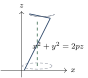
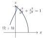
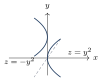
方向导数、梯度、散度与旋度
设 $u=f(x,y,z)$ 在 $P_0$ 可微，$\boldsymbol l^{0}=(\cos\alpha,\cos\beta,\cos\gamma)$ 为单位方向向量：
梯度：$\mathbf{grad} u=\Bigl(\dfrac{\partial u}{\partial x},\dfrac{\partial u}{\partial y},\dfrac{\partial u}{\partial z}\Bigr)$;
梯度方向 $=$ 方向导数最大的方向，模 $|\mathbf{grad} u|=\sqrt{u_x'^{2}+u_y'^{2}+u_z'^{2}}$ $=$ 方向导数的最大值;
沿负梯度方向减少最快;
与梯度垂直的方向上方向导数为零。
设向量场 $\boldsymbol A=(P,Q,R)$：
记忆：$\mathbf{rot} \boldsymbol A=\mathbf{grad}\times\boldsymbol A$（“升维叉乘”），$\mathbf{div} \boldsymbol A=\mathbf{grad}\cdot\boldsymbol A$。
空间曲线 $\Gamma: x=x(t),y=y(t),z=z(t)$ 在 $t=t_0$ 处：切向量 $\boldsymbol T=(x'(t_0),y'(t_0),z'(t_0))$， 切线 $\dfrac{x-x_0}{x'_0}=\dfrac{y-y_0}{y'_0}=\dfrac{z-z_0}{z'_0}$，法平面 $x'_0(x-x_0)+y'_0(y-y_0)+z'_0(z-z_0)=0$。
隐式曲面 $F(x,y,z)=0$ 在点处：法向量 $\boldsymbol n=(F'_x,F'_y,F'_z)$， 切平面 $F'_x(x-x_0)+F'_y(y-y_0)+F'_z(z-z_0)=0$，法线 $\dfrac{x-x_0}{F'_x}=\dfrac{y-y_0}{F'_y}=\dfrac{z-z_0}{F'_z}$。
显式曲面 $z=f(x,y)$：$\boldsymbol n=(f'_x,f'_y,-1)$。
题型总结
求平面方程（例17.2）：点法式（设法向量）、三点式、平面束（过已知直线 $+$ 额外条件）;
投影直线（例17.3）：过直线作垂直于已知平面的平面（平面束），与已知平面联立;
异面直线夹角、位置关系（例17.4）：方向向量点积/叉积;
旋转曲面与投影（例17.5）：“$\sqrt{x^{2}+y^{2}}$ 替换”公式、消元投影;
空间曲线切线与法平面（例17.6、17.7）：参数式求 $\boldsymbol T$;
隐式曲线用 $\boldsymbol T=\boldsymbol n_1\times\boldsymbol n_2$;曲面切平面与法线（例17.8）：隐式 $F$ 或显式 $z=f(x,y)$ 套公式;
曲面类型判断（例17.9）：配方定标准型;
方向导数（例17.10–17.12）：单位化方向向量后代公式;
由两个不共线方向的方向导数联立方程组解偏导;
最大方向导数 $=$ 梯度模;散度与旋度（例17.13）：直接套公式（旋度按行列式展开）。
注意事项与易错点
方向导数公式要求方向向量单位化：$\boldsymbol l$ 未单位化时先除以模;
方向导数是数量（带正负）。可微是方向导数公式的充分条件：不可微时方向导数可能存在但公式失效（需用定义 $\lim_{t→0^+}\frac{f(P_0+t\boldsymbol l^{0})-f(P_0)}{t}$）。
梯度的三个“最”：沿梯度方向增长最快（最大方向导数 $=|\mathbf{grad} u|$）;
沿负梯度下降最快;
沿垂直梯度方向变化率为零（等值面法向量即梯度）。点向式直线分母为零的含义：分子也必须为零，如 $\frac{x-x_0}{0}=\frac{y-y_0}{1}=\frac{z-z_0}{2}$ 表示 $x=x_0$。
平面束方程不含第二条平面本身，用前先确认所求平面不是 $A_2x+⋯+D_2=0$。
旋转曲面口诀“绕谁谁不变”：绕 $z$ 轴则 $z$ 不动，$x$（或 $y$）换 $\pm\sqrt{x^{2}+y^{2}}$;
曲线为参数式时用纬圆法 $x^{2}+y^{2}=x_1^{2}+y_1^{2}$。投影两步走：消元得柱面 $→$ 加坐标面方程;
求立体在坐标面上的投影区域同样用消元。叉积次序：$\boldsymbol a\times\boldsymbol b=-\boldsymbol b\times\boldsymbol a$;
写行列式时第一行放单位向量 $\boldsymbol i,\boldsymbol j,\boldsymbol k$。点到直线距离用叉积模公式（$|\boldsymbol\tau\times\overrightarrow{M_0M_1}|/|\boldsymbol\tau|$），比先求垂足省时。
散度是数量、旋度是向量;
$\mathbf{rot}(\mathbf{grad} u)=\boldsymbol 0$、$\mathbf{div}(\mathbf{rot} \boldsymbol A)=0$ 两个恒等式可直接引用。
第18讲 多元函数积分学（仅数学一）
知识结构与考情
本讲是数一的压轴章节，“两类曲线积分 $+$ 两类曲面积分 $+$ 三大公式”：第一类曲线/曲面积分（无向，算质量）、第二类曲线/曲面积分（有向，算功与通量）;
格林公式（平面）、高斯公式（空间闭曲面转体积分）、斯托克斯公式（空间闭曲线转曲面积分）三大公式实现“降维打击”;
配套战术：补线（面）法、挖洞（奇点）法、换参数法、路径无关四等价。
计算题综合度全卷最高，需多画图、多总结。
核心知识点
第一类曲线积分与第一类曲面积分
参数式：$L: x=x(t),y=y(t) (\alpha\le t\le\beta)$，
直角坐标：$y=y(x)$ 时 $\mathrm{d}s=\sqrt{1+y'^{2}} \mathrm{d}x$;
极坐标：$r=r(\theta)$ 时 $\mathrm{d}s=\sqrt{r^{2}+r'^{2}} \mathrm{d}\theta$。
物理意义：线密度 $f$ 的曲线质量 $M=\int_L f \mathrm{d}s$;
$\int_L\mathrm{d}s=L$（弧长）。
曲面 $z=z(x,y)$（$xy$ 型）投影到 $D_{xy}$：
“一代二换三投影”：代入曲面方程、换 $\mathrm{d}S$、向坐标面投影。
物理意义：面密度 $f$ 的曲面质量。
若平行某坐标轴的直线交曲面多于一点，需分片处理。
第二类曲线积分与格林公式
两类联系：$\displaystyle\int_L P \mathrm{d}x+Q \mathrm{d}y=\int_L(P\cos\alpha+Q\cos\beta) \mathrm{d}s$，其中 $(\cos\alpha,\cos\beta)$ 为 $L$ 沿方向的单位切向量。
空间：$\displaystyle\int_\Gamma P \mathrm{d}x+Q \mathrm{d}y+R \mathrm{d}z$，两类联系用 $\boldsymbol\tau^{0}$。
设闭区域 $D$ 由分段光滑闭曲线 $L$ 围成，$P,Q$ 在 $D$ 上有一阶连续偏导数，$L$ 取正向（左手在区域内侧）：
补线法：$L$ 不封闭 $⇒$ 补有向线（段）$L_1$ 使 $L+L_1$ 封闭， $\displaystyle\int_L=\oint_{L+L_1}-\int_{L_1}$。
挖洞法：$D$ 内含奇点（$P,Q$ 无定义或偏导不连续）$⇒$ 作小圆（椭圆）$L_\varepsilon$ 包住奇点，在复连通区域上用格林公式;
常用结论：对 $\displaystyle\oint_L\frac{x \mathrm{d}y-y \mathrm{d}x}{x^{2}+y^{2}}$ 型，挖去小圆后沿任意同向闭路积分相等，小圆上算得 $\displaystyle\oint_{L_\varepsilon}\frac{x \mathrm{d}y-y \mathrm{d}x}{x^{2}+y^{2}}=2\pi$（逆时针）。
对称性：$L$ 关于 $y$ 轴对称，$P$ 关于 $x$ 为偶（奇）$⇒\int_LP \mathrm{d}x$ 为零（倍），$Q \mathrm{d}y$ 反之。
设 $P,Q$ 在单连通区域 $G$ 内有一阶连续偏导数，则下列四条等价：
原函数求法（折线法）：$u(x,y)=\displaystyle\int_{x_0}^{x}P(t,y_0) \mathrm{d}t+\int_{y_0}^{y}Q(x,t) \mathrm{d}t+C$;
且 $\displaystyle\int_{(x_1,y_1)}^{(x_2,y_2)}P \mathrm{d}x+Q \mathrm{d}y=u(x_2,y_2)-u(x_1,y_1)$。
第二类曲面积分与高斯、斯托克斯公式
直接投影法：$\iint_\Sigma R \mathrm{d}x\mathrm{d}y=\pm\iint_{D_{xy}}R[x,y,z(x,y)] \mathrm{d}x\mathrm{d}y$，曲面上侧取 $+$、下侧取 $-$（$P \mathrm{d}y\mathrm{d}z$ 向 $yz$ 面、前侧 $+$; $Q \mathrm{d}z\mathrm{d}x$ 向 $zx$ 面、右侧 $+$）。
转换投影法（$xy$ 型曲面，一网打尽三项）：
两类联系：$\displaystyle\iint_\Sigma(P\cos\alpha+Q\cos\beta+R\cos\gamma) \mathrm{d}S$，$(\cos\alpha,\cos\beta,\cos\gamma)$ 为指定侧单位法向量。
高斯公式：闭曲面 $\Sigma$ 取外侧，$\Omega$ 为其围成区域：
补面法：$\Sigma$ 不封闭 $⇒$ 补 $\Sigma_1$ 使封闭，$\displaystyle\iint_\Sigma=\oiint_{\Sigma+\Sigma_1}-\iint_{\Sigma_1}$。
挖洞法：$\Omega$ 含奇点 $⇒$ 挖小球面 $\Sigma_\varepsilon$（同侧）， $\displaystyle\oiint_{\Sigma}=\oiint_{\Sigma_\varepsilon}$（对 $\frac{x \mathrm{d}y\mathrm{d}z+y \mathrm{d}z\mathrm{d}x+z \mathrm{d}x\mathrm{d}y}{(x^{2}+y^{2}+z^{2})^{3/2}}$ 型，小球面上恒为 $4\pi$）。
斯托克斯公式：$\Gamma=\partial\Sigma$，方向与 $\boldsymbol n^{0}$ 成右手系：
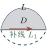
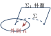
题型总结
第一类曲线积分（例18.1–18.5）：参数化代入;
利用 $L$ 方程化简被积函数（“边界代换”）;
对称性;
质心公式反用 $\int_L x \mathrm{d}s=\bar x\cdot L$;第二类曲线积分·格林公式（例18.6–18.13）：补线法、挖洞法、对称性、“边界代换”;
积分与路径无关（例18.14–18.21）：验证 $\frac{\partial Q}{\partial x}=\frac{\partial P}{\partial y}$、选折线路径、折线法求原函数 $u$;
第一类曲面积分（例18.22 前部分）：投影 $+$ “$\Sigma$ 方程代入”;
对称性（偶倍奇零）;第二类曲面积分·直接投影/转换投影（例18.22–18.25）：先求指定侧法向量;
高斯公式（例18.26–18.29）：闭曲面直接用;
不闭补面;
含奇点挖洞（同侧等值替换）;斯托克斯公式（例18.30）：空间闭曲线转曲面积分（常再接高斯或投影）;
散度旋度综合：$\mathbf{div} \mathbf{rot} \boldsymbol A=0$ 等恒等式。
注意事项与易错点
第一类积分无方向：参数下限必须小于上限;
第二类积分方向即符号，起点对应下限。格林公式三查：闭？正向？$P,Q$ 偏导连续（含分母不为零）？三查不全则先补线或挖洞。
挖洞法方向一致：外边界与内边界取同向（都逆时针或都顺时针，复连通区域正向为“外逆内顺”）。
路径无关的前提是单连通 $+$ 偏导连续：含奇点的区域不能直接用四等价，但可以“绕开奇点”选路径。
边界代换：曲线/曲面积分中可把方程代入被积函数化简（$\int_{x^2+y^2=1}\frac{\mathrm{d}s}{x^{2}+y^{2}}=\int\mathrm{d}s=2\pi$）;
二重/三重积分不能这样代入。第一类曲面积分投影的前提：平行于投影轴的直线与曲面至多交一点;
柱面部分要单独处理（向另一坐标面投影）。转换投影法一次算三项：注意符号——上侧（法向量与 $z$ 轴正向夹角小于 $90^\circ$）取 $+$。
高斯公式用外侧;
内取负号;
$\mathbf{div} \boldsymbol F=0$ 时可通过任何同侧闭曲面通量相同，用来“换面”。斯托克斯的定向：右手定则——四指沿 $\Gamma$ 方向，拇指指向 $\Sigma$ 的法向量侧。
挖洞经典结论：平面 $\oint\frac{x \mathrm{d}y-y \mathrm{d}x}{x^{2}+y^{2}}=2\pi$;
空间 $\oiint\frac{x \mathrm{d}y\mathrm{d}z+y \mathrm{d}z\mathrm{d}x+z \mathrm{d}x\mathrm{d}y}{(x^{2}+y^{2}+z^{2})^{3/2}}=4\pi$（包围原点，外侧）。对称性辨析：第一类有“偶倍奇零”;
第二类曲线/曲面积分的对称性规则相反且易错，拿不准就用公式老老实实算。
附录A 常用公式总速查
A.1 极限与连续核心公式
一阶：$\sin x\sim\tan x\sim\arcsin x\sim\arctan x\sim\ln(1+x)\sim e^{x}-1\sim x$;
$a^{x}-1\sim x\ln a$;
$(1+x)^{\alpha}-1\sim\alpha x$;
$1-\cos x\sim\frac{x^{2}}{2}$;
$1-\sqrt{\cos x}\sim\frac{x^{2}}{4}$。
高阶差式：$x-\sin x\sim\arcsin x-x\sim\frac{x^{3}}{6}$;
$x-\arctan x\sim\tan x-x\sim\frac{x^{3}}{3}$;
$\tan x-\sin x\sim\frac{x^{3}}{2}$;
$x-\ln(1+x)\sim\frac{x^{2}}{2}$。
增长速度（$x→+∞$）：$\ln^{\alpha}x\ll x^{\beta}\ll a^{x}$（$a>1$）;
增长速度快的吃掉慢的。
$\displaystyle\lim_{x→0}\frac{\sin x}{x}=1$;
$\displaystyle\lim_{\square→∞}\Bigl(1+\frac1{\square}\Bigr)^{\square}=e$;
$1^{∞}$ 型：$\lim\limits_{u\to 1} u^{v}=e^{\lim\limits_{u\to 1} v(u-1)}$（$u→1,v→∞$）;
$\displaystyle\lim_{x→∞}\Bigl(1+\frac ax\Bigr)^{bx+c}=e^{ab}$;
$\displaystyle\lim_{x→∞}\Bigl(\frac{x+a}{x-a}\Bigr)^{x}=e^{2a}$;
$\displaystyle\lim_{x→0^{+}}x^{\alpha}\ln x=0 (\alpha>0)$。
A.2 求导与微分核心公式
| $(x^{\alpha})'=\alpha x^{\alpha-1}$ | $(a^{x})'=a^{x}\ln a$ | $(e^{x})'=e^{x}$ | $(\ln|x|)'=\dfrac1x$ |
| $\sin'=\cos$ | $\cos'=-\sin$ | $\tan'=\sec^{2}$ | $\cot'=-\csc^{2}$ |
| $(\sec)'=\sec\tan$ | $(\csc)'=-\csc\cot$ | $(\arcsin)'=\dfrac1{\sqrt{1-x^{2}}}$ | $(\arccos)'=-\dfrac1{\sqrt{1-x^{2}}}$ |
| $(\arctan)'=\dfrac1{1+x^{2}}$ | $(\mathrm{arccot})'=-\dfrac1{1+x^{2}}$ | $(x^{x})'=x^{x}(1+\ln x)$ | $|x|'=\mathrm{sgn} x (x\neq0)$ |
高阶：$(e^{ax})^{(n)}=a^{n}e^{ax}$;
$(\sin ax)^{(n)}=a^{n}\sin\bigl(ax+\frac{n\pi}2\bigr)$;
$(\cos ax)^{(n)}=a^{n}\cos\bigl(ax+\frac{n\pi}2\bigr)$;
$\Bigl(\dfrac1{ax+b}\Bigr)^{(n)}=\dfrac{(-1)^{n}a^{n}n!}{(ax+b)^{n+1}}$;
$(\ln(ax+b))^{(n)}=\dfrac{(-1)^{n-1}a^{n}(n-1)!}{(ax+b)^{n}}$;
$\bigl(x^{\mu}\bigr)^{(n)}=\mu(\mu-1)⋯(\mu-n+1)x^{\mu-n}$。
莱布尼茨：$(uv)^{(n)}=\sum\limits_{k=0}^{n}\binom nk u^{(n-k)}v^{(k)}$。
A.3 积分核心公式
$\displaystyle\int x^{k}\mathrm{d}x=\frac{x^{k+1}}{k+1}+C (k\neq-1)$;
$\displaystyle\int\frac{\mathrm{d}x}{x}=\ln|x|+C$;
$\displaystyle\int e^{x}\mathrm{d}x=e^{x}+C$;
$\displaystyle\int a^{x}\mathrm{d}x=\frac{a^{x}}{\ln a}+C$;
$\displaystyle\int\sin x \mathrm{d}x=-\cos x+C$;
$\displaystyle\int\cos x \mathrm{d}x=\sin x+C$;
$\displaystyle\int\tan x \mathrm{d}x=-\ln|\cos x|+C$;
$\displaystyle\int\cot x \mathrm{d}x=\ln|\sin x|+C$;
$\displaystyle\int\sec x \mathrm{d}x=\ln|\sec x+\tan x|+C$;
$\displaystyle\int\csc x \mathrm{d}x=\ln|\csc x-\cot x|+C$;
$\displaystyle\int\sec^{2}x \mathrm{d}x=\tan x+C$;
$\displaystyle\int\csc^{2}x \mathrm{d}x=-\cot x+C$;
$\displaystyle\int\frac{\mathrm{d}x}{a^{2}+x^{2}}=\frac1a\arctan\frac xa+C$;
$\displaystyle\int\frac{\mathrm{d}x}{a^{2}-x^{2}}=\frac1{2a}\ln\Bigl|\frac{a+x}{a-x}\Bigr|+C$;
$\displaystyle\int\frac{\mathrm{d}x}{\sqrt{a^{2}-x^{2}}}=\arcsin\frac xa+C$;
$\displaystyle\int\frac{\mathrm{d}x}{\sqrt{x^{2}\pm a^{2}}}=\ln\Bigl|x+\sqrt{x^{2}\pm a^{2}}\Bigr|+C$;
$\displaystyle\int\sqrt{a^{2}-x^{2}} \mathrm{d}x=\frac{a^{2}}2\arcsin\frac xa+\frac x2\sqrt{a^{2}-x^{2}}+C$。
$\displaystyle\int_{-a}^{a}f \mathrm{d}x=\int_0^a[f(x)+f(-x)] \mathrm{d}x$;
$\displaystyle\int_a^b f(x) \mathrm{d}x=\int_a^b f(a+b-x) \mathrm{d}x$（区间再现）;
华里士：$\displaystyle\int_0^{\pi/2}\sin^{n}x \mathrm{d}x=\int_0^{\pi/2}\cos^{n}x \mathrm{d}x=\frac{(n-1)!!}{n!!}\cdot\begin{cases}\frac\pi2,& n \text{偶}\\[4pt]
1,&n \text{奇}\end{cases}$;
$\displaystyle\int_0^{\pi}\sin^{n}\frac x2 \mathrm{d}x=2\int_0^{\pi/2}\sin^{n}t \mathrm{d}t$。
周期：$\displaystyle\int_a^{a+T}f=\int_0^T f$;
$\displaystyle\int_0^{nT}f=n\int_0^T f$。
$\Gamma$ 函数：$\displaystyle\Gamma(s)=\int_0^{+∞}x^{s-1}e^{-x}\mathrm{d}x=\Gamma(s+1)/s$，$\Gamma(n+1)=n!$，$\Gamma\bigl(\tfrac12\bigr)=\sqrt\pi$。
A.4 几何应用核心公式
$S_{xy}=\displaystyle\int|y_1-y_2| \mathrm{d}x$;
$S_{\text{极}}=\dfrac12\displaystyle\int r^{2} \mathrm{d}\theta$;
$V_x=\pi\displaystyle\int y^{2} \mathrm{d}x$;
$V_y=2\pi\displaystyle\int x|y| \mathrm{d}x$（柱壳）;
$V=2\pi\displaystyle\int d(x) |y| \mathrm{d}x$（绕任意水平线，$d$ 为旋转半径）;
绕一般直线用“$2\pi\times$形心路程”;
$\mathrm{d}s=\sqrt{1+y'^{2}} \mathrm{d}x=\sqrt{x'^{2}+y'^{2}} \mathrm{d}t=\sqrt{r^{2}+r'^{2}} \mathrm{d}\theta$;
$S_{\text{侧}}=2\pi\displaystyle\int|y| \mathrm{d}s$;
形心 $\displaystyle\bar x=\frac{\int x \mathrm{d}s}{L}$、$\displaystyle\bar y=\frac{\int \tfrac12 y^{2} \mathrm{d}x}{\int y \mathrm{d}x}$;
曲率 $K=\dfrac{|y''|}{(1+y'^{2})^{3/2}}$，$R=1/K$。
A.5 级数核心公式（数一、数三）
$p$ 级数：$p>1$ 收敛，$p\le1$ 发散;
比较：“大收小收，小散大散”;
比值/根值：$\rho<1$ 收，$\rho>1$ 散，$\rho=1$ 失效;
莱布尼茨：单减 $+ →0$ $⇒$ 收敛;
绝对收敛 $⇒$ 收敛。
常用和：$\displaystyle\sum_{n=1}^{∞}\frac1{n^{2}}=\frac{\pi^{2}}6$;
$\displaystyle\sum_{n=0}^{∞}x^{n}=\frac1{1-x} (|x|<1)$;
$\displaystyle\sum_{n=1}^{∞}nx^{n-1}=\frac1{(1-x)^{2}}$;
$\displaystyle\sum_{n=1}^{∞}\frac{x^{n}}{n}=-\ln(1-x)$;
展开（必背）：$\displaystyle e^{x}=\sum\limits_{n=0}^{\infty}\frac{x^{n}}{n!}$;
$\displaystyle\sin x=\sum\limits_{n=0}^{\infty}\frac{(-1)^n x^{2n+1}}{(2n+1)!}$;
$\displaystyle\cos x=\sum\limits_{n=0}^{\infty}\frac{(-1)^n x^{2n}}{(2n)!}$;
$\displaystyle\frac1{1-x}=\sum\limits_{n=0}^{\infty} x^{n}$;
$\displaystyle\ln(1+x)=\sum\limits_{n=1}^{\infty}\frac{(-1)^{n-1}x^{n}}{n} (-1<x\le1)$;
$\displaystyle(1+x)^{\alpha}=1+\sum_{n=1}^{∞}\frac{\alpha(\alpha-1)⋯(\alpha-n+1)}{n!}x^{n} (-1<x<1)$;
$\displaystyle\arctan x=\sum\limits_{n=0}^{\infty}\frac{(-1)^nx^{2n+1}}{2n+1}$。
附录B 函数图像变换与常用曲线
B.1 图像变换三大规则
平移：$y=f(x\pm x_0)$ 左右平移（$+x_0$ 左移）;
$y=f(x)\pm y_0$ 上下平移（$+y_0$ 上移）。
对称：$y=-f(x)$ 关于 $x$ 轴;
$y=f(-x)$ 关于 $y$ 轴;
$y=-f(-x)$ 关于原点;
$y=f^{-1}(x)$ 关于 $y=x$;
$y=|f(x)|$：保留 $x$ 轴上方、下方翻折上去;
$y=f(|x|)$：保留 $y$ 轴右侧、左侧对称翻折。
伸缩：$y=f(kx)$ 横坐标缩为 $\frac1k$;
$y=kf(x)$ 纵坐标伸为 $k$ 倍。
$F(x,y)=F(-x,y)$：关于 $y$ 轴对称;
$F(x,y)=F(x,-y)$：关于 $x$ 轴对称;$F(x,y)=F(2T-x,y)$（即 $F(T+x,y)=F(T-x,y)$）：关于直线 $x=T$ 对称;
$F(-x,-y)=F(x,y)$：关于原点对称;
$F(x,y)=F(y,x)$：关于 $y=x$ 对称;$F(a+x,y)=F(a-x,-y)$：关于点 $(a,0)$ 对称。
B.2 常用极坐标曲线图像集（必会画图）
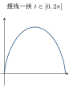
心形线：$r=a(1-\cos\theta)$（另三种朝向：$a(1+\cos\theta)$、$a(1\pm\sin\theta)$）;
面积 $\frac{3}{2}\pi a^{2}$，弧长 $8a$。
双纽线：$r^{2}=a^{2}\cos2\theta$（左右）、$r^{2}=a^{2}\sin2\theta$（上下）;
面积 $\frac{a^{2}}{2}$（单叶）。
玫瑰线：$r=a\sin n\theta$（$n$ 奇叶数 $=n$; $n$ 偶叶数 $=2n$）。
摆线：$\begin{cases}x=a(t-\sin t)\\[4pt]
y=a(1-\cos t)\end{cases}$;
一拱长 $8a$，与 $x$ 轴围面积 $3\pi a^{2}$，绕 $x$ 轴旋转体积 $5\pi^{2}a^{3}$。
星形线：$\begin{cases}x=a\cos^{3}t\\[4pt]
y=a\sin^{3}t\end{cases}$（$x^{2/3}+y^{2/3}=a^{2/3}$）;
全长 $6a$，面积 $\frac{3\pi a^{2}}8$。
螺线：阿基米德 $r=a\theta$;
对数 $r=e^{a\theta}$;
双曲 $r\theta=a$。
笛卡儿叶形线：$x^{3}+y^{3}-3axy=0$，参数式 $\begin{cases}x=\frac{3at}{1+t^{3}}\\[4pt]
y=\frac{3at^{2}}{1+t^{3}}\end{cases}$，渐近线 $x+y+a=0$。
B.3 常用空间图形（数一）
椭球面 $\frac{x^{2}}{a^{2}}+\frac{y^{2}}{b^{2}}+\frac{z^{2}}{c^{2}}=1$;
单叶双曲面 $\frac{x^{2}}{a^{2}}+\frac{y^{2}}{b^{2}}-\frac{z^{2}}{c^{2}}=1$;
双叶双曲面 $\frac{x^{2}}{a^{2}}+\frac{y^{2}}{b^{2}}-\frac{z^{2}}{c^{2}}=-1$;
椭圆抛物面 $z=\frac{x^{2}}{a^{2}}+\frac{y^{2}}{b^{2}}$;
双曲抛物面（马鞍面）$z=\frac{x^{2}}{a^{2}}-\frac{y^{2}}{b^{2}}$;
椭圆锥面 $\frac{x^{2}}{a^{2}}+\frac{y^{2}}{b^{2}}=z^{2}$;
圆柱面 $x^{2}+y^{2}=a^{2}$、抛物柱面 $z=y^{2}$、平面束 $x-y=0$ 等;
经典组合：球与锥（冰激凌）、球与抛物面、牟合方盖（两直交圆柱）。
附录C 重要不等式与变形技巧
C.1 常用不等式速查
均值：$\dfrac{2}{\frac1a+\frac1b}\le\sqrt{ab}\le\dfrac{a+b}2\le\sqrt{\dfrac{a^{2}+b^{2}}2} (a,b>0)$;
三角：$\sin x<x<\tan x (0<x<\frac\pi2)$，$\frac2\pi<\frac{\sin x}x<1 (0<x<\frac\pi2)$;
对指：$\dfrac{x}{1+x}<\ln(1+x)<x (x>0)$;
$x-\ln(1+x)<\dfrac{x^{2}}{2}$;
$x\ln x\ge-\dfrac1e (x>0)$;
$e^{x}>1+x$;
$e^{x}-\ln x>2$;
$(1+\frac1x)^{x}<e<x\bigl(1+\frac1x\bigr)^{x+1}$;
$n!<n^{n}$;
$|\sin x|\le|x|$;
$|\cos x|\le\bigl|x-\frac\pi2\bigr|$（点 $\frac\pi2$ 附近）。
极限保号性加强：$\lim\limits_{n\to\infty} x_n=a\neq0⇒$ 尾部 $|x_n|>\frac{|a|}{2}$;
单调：$f$ 增 $⇒(x-x_0)[f(x)-f(x_0)]\ge0$;
积分和放缩（$f$ 单减）：$\displaystyle\sum_{k=1}^{n-1}f(k+1)\le\int_1^{n}f(x) \mathrm{d}x\le\sum_{k=1}^{n-1}f(k)$，由此 $\ln n$ 与调和和 $\sum\limits_{k=1}^{n}\frac1k$ 互相夹逼;
凹凸性：$f''>0⇒ f(x)\le f(a)+\dfrac{f(b)-f(a)}{b-a}(x-a)$（弦在曲线上方）。
C.2 变形技巧八大招
整体代换：$x+\frac1x$ 型配 $x^{2}+\frac{1}{x^{2}}=\bigl(x+\frac1x\bigr)^{2}-2$;
函数方程组消元：由 $f$ 满足的两条关系联立解 $f(x)$;
指数对数化：$x=e^{\ln x}$，$u^{v}=e^{v\ln u}$;
等价变形三法：定义法、公式法、换元法;
换元是万能钥匙（$u=ax+by+c$、$u=\frac yx$、$u=xy$）;积化和差：求高阶导数优先 $\sin a x\cos bx$ 化和差，避免复杂莱布尼茨;
裂项相消：$\frac{1}{(2n-1)(2n+1)}=\frac12\bigl(\frac1{2n-1}-\frac1{2n+1}\bigr)$;
级数比值的 $\frac{a_n}{S_n^{2}}<\frac1{S_{n-1}}-\frac1{S_n}$;根式有理化：$\sqrt b-\sqrt a=\frac{b-a}{\sqrt b+\sqrt a}$;
定积分放缩：$\tan$ 换元 $t=\tan x$ 后 $\int_0^{\pi/4}\tan^{n}x \mathrm{d}x<\frac1{n+1}\bigl(\frac14\bigr)^{n+1}$ 型估计。
极限计算先定型：$e^{1/(x-1)}$ 左右极限、洛必达三条件、泰勒展开阶数;
微分概念：分界点用定义;
$|f|$ 与 $f'$ 的奇偶互换;中值定理：辅助函数、区间端点值核对、多次罗尔需要几个等值点;
积分：对称区间先奇偶、变限积分求导先移 $x$、反常积分奇点个数;
微分方程：类型识别顺序（可分离 $→$ 齐次 $→$ 线性 $→$ 伯努利）;
级数：先验必要条件;
幂级数端点单独判;
逐项求导积分补端点;多元：可微 $⇒$ 偏导存在 $+$ 连续（反向不成立）;
极值 $AC-B^{2}$;线面积分：第一类无方向、第二类有方向;
三大公式先查条件（闭、正向/外侧、无奇点）再套。